| いのちを救う先端技術 医療機器はどこまで進化したのか (PHP新書) | |
| 久保田博南 | |
| PHP研究所 (2008) | |

いのちを救う先端技術
――医療機器はどこまで進化したのか
久保田博南
はじめに
今や〝ケータイ〟の全盛期。そのため、ここ数年来、電車やバスの車内で頻繁に、「医療機器を使用されている方のご迷惑になりますので、携帯電話の電源をお切りください」という注意喚起がアナウンスされる。ここでいう「医療機器」は明らかに「心臓ペースメーカ」であり、医療機器一般を意味しているわけではない。
では、なぜ「医療機器」という漠然とした用語を使うのだろうか。
じつは、「医療機器」とは何かという基本的なことが理解されていないのだ。医療機器にはどんな機種があるのか、ということもわかっていない。「医療機器」の意味さえわかっていないアナウンスが、聞く人に注意をうながすアピールにならないことも自明の理であろう。
少なくとも、「医療機器」は「心臓ペースメーカ」の代名詞とはなりえない。本筋からいうなら、医療機器とは病院や診療所で使われている機器がその主軸を占めるもので、せめて、その程度のことはわかってもらいたい。そのことを本業としている人間からみれば、医療機器のイロハくらいは理解してほしいと思う。
しかも、そのことはどなたにとっても、ご自身の健康に関わることで、イロハから進んで、さらに深い興味をもっていただければ、それがご自分の身体と、うまくつきあうための知識にもなる。
とはいえ、「医療機器」ということばそのものも、最近になってようやく一般化した。以前は、法律的には「医療用具」という名称が使われていた。このことを私は、講演とか業界誌の原稿でことあるごとに指摘してきたが、政府が実際に「医療機器」の名称を与えたのは２００５年４月のことだ。やっと世間的に一人前になって、まだ数年しか経っていない。技術的レベルからも、あるいは世の中の必要度からしても、決して他の分野の機器に引けを取らないのに、行政的には明らかに「時代遅れ」かつ「子供扱い」だ。
ついでにいうと、「医療機器」は「薬事法」という法律のもとで規制されている。「薬」という大きな家の中でほそぼそと暮らす居候のような存在である。その居候の後見人のような私の立場からすれば、ひいき目な言い方になるのは承知のうえだが、世間的にも早く独り立ちした成人として認められたいと願う。
これは私自身にとっても夢物語だが、こんなことを訴えても「医療機器法」なる法律ができるのはさらに10年以上もかかるだろう。
その願いを実現するために、まずは足下を固めなければならない。そこで、「現在の医療機器」がどうなっているのか、と自問してみた。しかし、私自身がこの業界内にいるため、内輪からの視点になって、自己満足的に納得してしまうか、問題点のみを強調してしまいそうなおそれがある。
そこで、視点の時期を半世紀以前に設定してみよう、と考えた。そうすれば、私自身も中・高校生レベルの見方に戻れる。そこから、現在の技術を眺めるようにすれば、「最新の医療機器」をその視座で評価できるのではないか。
この方法には、メリットがもう一つある。まず一般の人に医療機器を容易に理解してもらえる。中・高生のレベルなら、医療機器にまったく無関係な人であっても、理解しやすいはずである。じつは、それが私の願いであり、またそれこそが私自身の真の目的に通じる。
まずは、時間軸を半世紀近く戻してみよう。
東京オリンピックが開催される前年、１９６３年に私が工学部を卒業したとき、選んだ会社は医療機器メーカーだった。主任教授が勧めてくれたのだが、それが生涯をともにする機器との出合いだ。それから45年もの間、機器開発業務を中心に国内外のメーカーと関係してきた。
その当時は、「心臓ペースメーカ」や、最近ではどこにでも設置されている「ＡＥＤ」もなかった。それなら、新入社員当時の心境に戻って、一から説明を試みてみようではないか、さらに、当時の好奇心を思い出しつつ、新鮮でおもしろく書いてみたい、と考えた。
そんなことを目論んで、本書の執筆にとりかかろうと思う。
久保田博南
バイタルサインはロックの曲名？
「バイタルサイン」とは、救急患者などの重症者をモニタするための項目であり、医療現場では常識となっている用語である。
ところがグーグルで「バイタルサイン」を検索したら、画面にあらわれてきた解説を見て、一瞬軽いショックを受けた。なんと、ロックの曲名に使われているではないか。これは一体どういうことなのだろう。ロックと聞いて私が連想できるのは、エルビス・プレスリーの「監獄ロック」程度で、それもかなり昔の遠い記憶でしかない。だから、ロックの曲名といわれても、そのつながりを推定することさえ困難だった。その解説によれば、この「バイタルサイン」という曲は２００５年に発表されている。
その前年の新潟県中越地震の際、クルマの中に取り残された母子の救急現場からの実況は人びとの記憶に深く刻みついている。男児が救出された後、母親の状況を伝えた救急隊員の報告が「脈などのバイタルサインは確認できない」だった。一縷の望みを抱いて食い入るようにテレビを見つめていた多くの人は、このキーワードに絶望した。
ロックグループの「クラムボン」が奏でる「バイタルサイン」は、テーマとしてこの状況を取り込んでいる。しかし、この曲名を思いついた動機は、母親の「バイタルサイン」より奇跡的に救出された男児の「生命力の強さ」を対極的にイメージしているようだ。そこまで読んで、ロックとバイタルサインがやっと結びついた。
その解説を読み終わらないうちに、私の指はふだん買ったこともない音楽ＣＤの〝注文〟をクリックしていた。
生命兆候を探る技術
私が「バイタルサイン」を測定する機器を開発する仕事に関わってから、長い時間が経過した。重症患者の状態をモニタするための項目、それが「バイタルサイン」であり、一人の重症患者が生きるか死ぬかという、緊迫した場面で使われることが多い。その状況を、確実に読み取る機器を作ることが今でも重要な課題である。この機器は「生体情報モニタ」や「バイタルサインモニタ」とよばれるが、病院内などで比較的頻繁に使われるのは、救急病棟、手術室、ＩＣＵというような救急救命の場だ。
ロックの軽快なテンポを考えると本来の「バイタルサイン」とは直結しにくい。「バイタルサイン」は厳粛な場面で使われるものであり、それなりの「深さ」や「重さ」をもっている。だから私にとってあまりにも離れている二つの事象をつなげるための線を引くことが困難だった。ところが、その遠い隔たりを一人の救急隊員が見事に一本の線で結んだ。
「バイタルサイン」は、「生命兆候」と訳される。現時点ではあえて「生命兆候」という難解な日本語に訳すしかないほどで、まだ一般用語になったとはいい難く、それが何を意味するのかすぐには理解できない。
わかりやすく説明するには、具体例を出すほうが手っ取り早い。いくつかあげてみると、「心臓が動いている」「呼吸をしている」「意識がある」と、このような単純な実例を並べれば少しは理解しやすくなるだろう。「バイタルサイン」は、人間や動物が「生きている証拠」のことを意味している。簡単な実例で説明したが、じつはこの「生きている証拠」を確実に測定し、その事実を明確に示すための工学技術は、そう単純なものではない。
人体相手のエンジニアリング
私が「バイタルサイン」をグーグルで検索したきっかけは、そのことをテーマにした記事を執筆中だったからだ。長年、研究の対象としてきた専門用語がウエブ上でどう説明されているのだろう、という興味もあった。一般人に対して正確に説明されているのかどうか、仕事柄そのことが心配だった。だが、ウエブ上での検索は百科事典でのそれとは大違いで、ときにはこんな突飛な出合いも提供してくれる。
この予想外の体験が私に「バイタルサインの測定技術」を、一般の読者に対してまともに説明するべきだ、という確固たる命題を与えてくれた。少なくとも「いのちを見守る」ための最先端の技術を、その重要度とともに意義をも解説すべきだという気がしてきた。自分のライフワークとしてつきあっている「キーワード」に対する責任感だと思った。
医師は、人体の生理機能をもとに病気と闘う人と向き合っている。人体の特性を理論的に分析したうえで、最良の療法を実行する。
一方、医師でない私は、工学的な観察眼で人体と対峙してきた。「生きている証拠」をどう確認し、病状が進行しているのか、治癒に向かっているのかをチェックする。そのためにどういう工学技術を駆使するか、それが継続的でかつ永遠のテーマでもある。
かつては、生死判定の基準として「心電図」や「脳波」を測定して、その情報分析をベースにしてきた。だが、最近では、「パルスオキシメータ」という最新鋭の医療機器を使って、手軽に「呼吸と心臓の拍動」をとらえることが可能となった。生体情報を測定する技術やそれにともなう医療機器は年々進歩している。そのうえ、この分野の技術にもＩＴ化の波は押し寄せている。
たった一度のクリックから、一冊の本が生まれるきっかけになった。しかし、本書のまともな目的をいうなら、「生命の証を測定したり、ときには生命を救うための装置」について、最新の状況をわかりやすく伝えることが本意であり、それ以外にはない。
人命探査装置など
生存者を探索する技術
時間はどんどん過ぎ去って、大地震（新潟県中越地震）発生から４日目になる。クルマに閉じこめられたままの母子がどうなっているのか、多くの人びとが気をもんでいた。
新潟の現場へ人命救助を要請されたのは、東京消防庁消防救助機動部隊（通称、ハイパーレスキュー隊）である。昼夜を徹して続けられている母子の探索の模様は、マスメディアをとおして茶の間にも届けられていた。しかし、時間の経過とともに、生存の確率が小さくなっていくのは自明の理だ。果たして生存者がいるのか。もし生存者がいるとなれば、その救助活動は一刻を争うものとなる。
１９９５年の阪神・淡路大震災の後、こういうものがあったらもっと多くの人命を救えただろう、と待望されていた装置がある。それは生き埋めになっている人の生死を探査できる無線装置だ。あのときの苦い経験を教訓として実用化された装置が最新鋭の人命探査機器である。
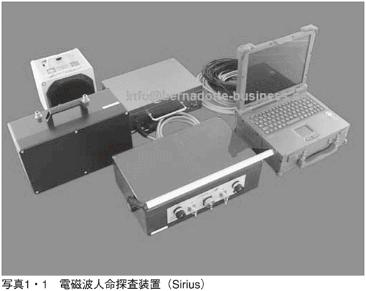
ドイツのメーカー、リオンビングス社が開発した通称「シリウス」で、それは「電磁波人命探査装置」とよばれる（写真１・１）。無線方式で電磁波を発して、がれきなどの中にいる人体に反応して、跳ね返ってきたかすかな信号をキャッチする。視界が遮蔽物でさえぎられ、人が埋もれているかどうかさえわからない状況でも、捜索が可能となった意義は大きい。電磁波が届く範囲の20～25メートル程度は捜索可能といわれているので、高性能の探知装置といえるだろう。この基本原理は、写真１・２に示した。
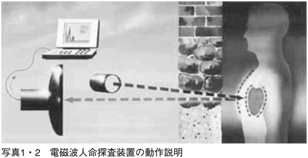
人間が「生きていることの証」となるのは、心臓と肺の動きである。
たとえ意識を失った状態でも、生きていれば心臓は拍動しているし、胸郭は呼吸のための拡張・収縮運動をくり返している。動きのある対象物（臓器）に反射した電磁波は、それらの動きに呼応した信号変化が生じる。人間の場合、成人なら脈拍数は正常なときには60～80回／分程度、呼吸数は20回／分程度である。実際には、ごく微弱な変化が加わった反射波を受信して復調すれば、コンピュータ解析によりパソコン画面上に生のデータが表示できる。
生きている人間の生存が検知できるのは、心拍数や呼吸数など周期性の信号が検出できるからだ。野外では、他の動物からの信号も検知されることもあるが、人間の心臓や肺の動きは、ウサギやネズミなど他の生命体のそれとは周期が異なることから、生存している人間がいることが検知可能となる。ネズミなどは、脈拍数が数百もあるので、人間のそれとは別の信号であることが判定できる。
だが、「シリウス」は総重量が40キロもあり、崖崩れの場所でも安定して設置することが必要となる。そのうえで、パソコン画面に表示される信号から「生命の鼓動」を抽出するのには、熟練者としての知識も要求される。
すでに人びとのかすかな希望が絶望に近づきつつあったとき、シリウスは一人の人間の鼓動を検知していた。この情報をもとに、ハイパーレスキュー隊は岩石に埋まったクルマに慎重に接近していった。
地震発生４日目の午後、ついに一つの小さな生命が救われた。最新の探査技術と高度な救急救命活動をとおしておこなわれた奇跡的でしかも貴重な成果だった。
生と死の判定
シリウスの基本技術として、電磁波を使っているところがキーポイントになる。なぜなら、捜索者に近づくことが難しく、視界がさえぎられているような状況でも、無線技術により間接的な検知が可能だからである。シリウスのもつハイテクとは、「人間の生死の遠隔判定技術」を意味している。
そのシリウスが生存者の判定基準として利用しているのは、心臓と肺の動きであることを述べたが、これらが周期的なリズムを刻むという性質を利用して人間が生きている証拠とされる。こうした「生きている証拠」となる生体信号が、一般にいわれる「バイタルサイン」なのだ。緊急時に使われることが多いことばとして、ようやく現代の日本語に定着しつつある。「生命兆候」は心臓や肺の活動だけに限られないが、この二つの生体信号が生きていることを実証できる最も代表的なものである。
男児の救出に続いて、シリウスはさらに残された二人の探索を続けていた。一人助かれば、もしかしてあとの二人も......と。そのわずかな期待もむなしく、ハイパーレスキュー隊からの報告は私たちを絶望へと導くものとなった。次に発見された母親からはバイタルサインが検知できなかったからだ。
じつは、あの現場でどうやって「それ」を確認したかは想像の域を脱しない。ただ、死亡を確認するには、いくつかの方法がある。いちばん簡単な方法で、しかも古くから知られている確認方法は、「脈をとる」ことだ。心臓が動いていれば、手首の付け根に軽く人差し指を当ててみると橈骨動脈という動脈の脈動が感じられるだろう。上腕の動脈は途中で二つに分かれており、親指側へ分かれるのが橈骨動脈で、もう一つの小指側へ分岐するのが尺骨動脈となる。ただし、こちら側での脈の確認はできない。
橈骨動脈は素人でも比較的容易に確認できるので、緊急時には役に立つ。もっと確実に知りたいときには、首の付け根の頸動脈に指を当ててみればよい。
このとき、脈が触れない、そのうえ、呼吸をしていない、体温が低下している、などの生命兆候がない状況なら、死を覚悟しなければならない。とはいえ、それらが確認できたとしても、「死亡」を「確定」することはできない。とくに、夜を徹しておこなわれている救急作業の現場などでは、そのことを確認するのは並大抵ではない。
このようなケースでは、今は小型の「パルスオキシメータ」という装置を使えば、かなり確かな情報を得ることが可能となった。救出を待つ人の指さえ出ていれば、それを取り付けるだけで、血中の酸素の状態や脈拍数までわかる。この装置もまた、現代の医療技術の進歩の好例の一つに数えられる。
進むバイタルサインの検知技術
「パルスオキシメータ」が生死の判定に有用な理由は、極めて単純明快だ。数十グラムの小型装置なのに、倒れている人の指をクリップのように挟んで取り付けるだけで、「心臓と肺の働き」の両方が数秒のうちに検出できる。わかりやすいように、簡易型のパルスオキシメータの一例を写真１・３に示す。
ジャーナリストの日垣隆さんにはじめてこの装置を見てもらったとき、小型の鉛筆削りのようで５００円くらいで買えそうだ、と感想をいってくれた。冗談にしてもうまいことをいうと感心した記憶がある。もちろん、それほど安っぽい機器ではないし、現代の医療機器の中でも代表的な〝優れもの〟だ。
測定原理は第５章で詳しく述べるが、簡単にいうと、赤い光などを指先に当て血液が赤いかどうかをチェックしている。その赤さのチェックをしながら、うまいことに「脈拍数」も数えられる。じつは血液の赤さから血液中の酸素のパーセンテージがわかるので、呼吸が確かかどうかも推定できるし、脈拍数から心臓の動きの状況もとらえられる。だから、パルスオキシメータを使うだけでも生死の判定が可能とさえいいきれる。
パルスオキシメータが優れた生体情報のチェッカーであるもう一つの要因は、取り扱いがとても簡単なことだ。ただし、測定対象が目に見えていることや測定対象に接触できることが最低条件となる。その意味では、シリウスとは測定方法や環境条件も異なるので直接的な比較にはなりにくいが、パルスオキシメータの取り扱いに関しては特別な訓練などほとんどいらない。
今や、パルスオキシメータは病院でなくてはならない装置として普及しており、そのうえ、救急の場においても利用され、バイタルサインの検知技術として優れた機能を発揮している。
とくに救急現場において必要なのは〝瞬時に使える生命チェッカー〟で、その重要な要求に応えられるエースが登場したことになる。
心電計・心電図モニタ
デンキナマズの話
昔から、デンキウナギ、デンキナマズ、シビレエイというような魚は、何やらわけのわからないエネルギーを発して敵を威嚇することで恐れられていた。そのショッキングなエネルギーに当たった小魚が死んでしまうことがあるし、川辺で水を飲んでいたウシが、その衝撃で卒倒することもある。
それが生物から出る「電気」だということは、長い間解明されなかった。不気味な「何か」が出ているという事実だけがわかっていたのだ。その実体が解明されないうえ、なぜそんなことが起こるのかも謎に包まれたままだった。
はじめて、生物と電気の関係を説明したのは、イタリアの学者ガルバーニ（１７３７～９８）である。彼は、デンキナマズなどの生物の電気現象とは違う場面で、それらしい事象に出くわす。その有名な実験現場と想定されているのは、鉄柵にぶら下げられたカエルが風に吹かれている光景だ。その「発見」は、ガルバーニ自身が予測していたものだったのか、あるいは、まったくの偶然だったのかは定かでない。だが、歴史的な事実の記載によれば、次のとおりである。
金属のフックに引っかけられて風に吹かれたカエルの足が鉄柵に触れるたびに、足の筋肉がピクピクと収縮したのだ。フックの材質は銅製だったという説と、真鍮でできていたという説がある。どちらにせよ、鉄とは異種の金属だったことに注目しておく必要がありそうだ。
ガルバーニの説明は、カエルの足の痙攣は異種の金属の接触によってカエルの足に電気が発生したからだ、というものだった。
生物電気現象の種明かし
さて、実際に生物電気現象はどう解釈すればいいだろうか。
まず、デンキウナギなどの電気魚が発する電気とは何だろう。それを理解していただくために、生体を作る細胞の話からはじめよう。
生物はすべて細胞から構成されている。この細胞の一つひとつを見ると、細胞膜という薄い膜で仕切られており、内外ともナトリウムイオンやカリウムイオンなどの電解液で満たされている。不思議なことに、その電解液の成分は大昔の海水の成分に似ている。その事実から、生物は海で生まれて進化してきた、と語り継がれている。
細胞内部の電解液は、普通の状態（静止状態という）では、細胞外と比べて電位が低い状態（マイナス80ミリボルトくらい）に保たれている。ところが、外部から何らかの刺激が加わると、この内部の電位はプラス20ミリボルトくらいまで跳ね上がる。これを「細胞の興奮」とよんでいる。
やがて興奮がおさまると、細胞の内部は再びマイナスの電位にもどる、ということがくり返されている。この一つひとつの細胞の興奮が同時に起これば、このときに発生する電圧がつみ重なって大きな電圧になる。
大きな刺激を発生することのできる生物は、自分の意志で外部に対して電気エネルギーを発散させる特殊な発電器官を備えている。まるで魔術師のようだが、こうした「電気攻撃能力」は一朝一夕に備わったものではなく、おそらく長い年月をかけて、祖先から子孫へと伝えられていったものだろう。
アマゾン川に生息するデンキウナギが発する電圧は、瞬間的に６００～８００ボルトにも達するといわれており、水を飲んでいるウシが卒倒するのに十分な威力なのである。
それでは、ガルバーニのカエルの足はなぜ痙攣したのだろう。
当時の記録から、その事実を実地検証してみよう。カエルをつり下げたフックの材質は銅か真鍮で、鉄でできた棚につり下げられたことになっている。つまり、風が吹くたびにカエルは異種の金属の間に挟まれる状態になった、というわけだ。
ガルバーニは、このときカエルの体内で電気が発生して足の筋肉を収縮させた、という説明をした。図２・１は、ガルバーニがこの様子を具体的に示した有名な説明図だ。二つの異種の金属、亜鉛（Ｚ）と銅（Ｃ）が接合してあり、これでカエルの足を挟んでいる。このとき、カエルの足が点線のように収縮した、というわけだ。
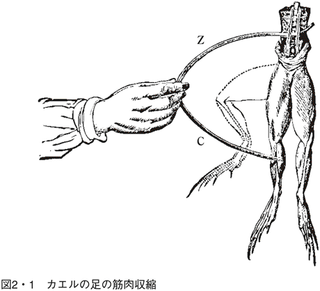
ところが、これに対する反論は同じイタリア人の物理学者ボルタから出された。彼の理論はガルバーニとは正反対で、電気はカエルの体内で発生したものではなく、二つの異種金属間で発生した電圧により、外部からカエルの足に電流が流れ込んだ、という説を唱えた。
つまり、もともとはカエルの体外から流れ込んだ電流が筋肉を収縮させたものである、と反論した。どうも、このほうが正解だ。カエルの生体細胞に外部からの電気的な刺激が加わって筋肉の細胞が興奮して収縮した、と考えられる。
カエルの足とヒトの心臓
デンキナマズやカエルなどの生物電気現象は、決して特異な生物だけが所有しているのではなく、われわれ人間を含めてどんな生物にも共通する現象なのだ。
ヒトの心臓からも電気が出ている。本当は「心臓から出る電気」という言い方は、正確ではない。まずは、このことを明らかにすることからはじめよう。
最初に、この現象を発見したのはオランダの生理学者アイントーフェン（写真２・２）で、１００年以上前の１９０３年のこと、ライト兄弟の最初の飛行機が飛び上がった年だ。
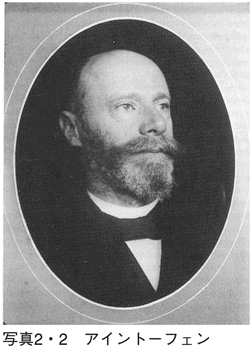
どの解説書を見ても、「心臓の収縮に起因して出る電気を発見し、それを彼自身が心電図（ＥＣＧ）と命名した」という説明に終始している。つまり、心臓が収縮する際に、微弱な電気も発生していることが判明し、それが心電図である、という解説になっている。
心臓が動いていること自体は古い時代からわかっていたのに対し、心臓の電気現象があとになって発見されたため、こういう事実誤認が生まれるのだろう。というのは、正確な事実はこれとはまったく逆なのだ。心臓を動かしているのが電気そのもので、電気現象が主役なのである。
心臓を動かす起点となるのは、上大静脈と右心房の境界にある洞結節という特殊な組織細胞で、これこそが心臓の動力源となる「発電所」なのだ。クルマのスパークプラグにたとえてみればわかりやすい。この洞結節から一秒に一回くらいの割合で、１００ミリボルトほどの電圧が発生している。とはいえ、この電圧は細胞から発生するもので、これが「細胞の興奮」そのものである。この興奮がつぎつぎに隣接する伝導系に伝わり、心臓全般に伝達されていく。この電気系統が心臓の収縮と弛緩をくり返す原動力となる。
だから、「心臓が収縮するときに出る電気」でなく、「心臓は電気によって収縮する」という表現が正確なのだ。
興奮すると収縮する
ここで、一つだけはっきりしておきたいことがある。細胞の興奮がなぜ収縮につながるのかを説明しないと話がつながらない。
「細胞の興奮」には、イオンが関係していたことを思い出していただきたい。細胞膜の内外でイオンの流れが発生し、それにより静止状態から興奮状態へと変化する。このとき、何が起こるかがここでの興奮の対象だ。
細胞学が教えるところによると、そのメカニズムはざっと次のように説明される。
細胞の興奮による動きの基本は「フィラメント滑走説」という原理が想定されている。フィラメントとは筋原繊維ともいわれ、太いフィラメントであるミオシンと細いフィラメントであるアクチンからなる。これらは重なり合うようにして層をつくり、ちょうどミオシンをアクチンが包み込むようになっている。ミオシンは不動だが、アクチンはミオシンの中に滑走するように動く。
この際、アクチンを動かす働きをするのがカルシウムイオンなのだ。そう、この「滑走」の主役が細胞の興奮時に外から内へ流れ込むカルシウムイオンである。このカルシウムイオンが、ＡＴＰ（アデノシン三リン酸）という物質に作用し、「滑走」の手助けをする。アクチンがミオシンの中に入り込むので、その結果「収縮」する、というわけだ。
滑走などという単語を使うと、氷上のスケートでもイメージされそうだ。そのとおりに、ミクロの世界での話でも「滑り込む」という考え方が成り立ち、その結果、総合的にみれば筋肉の収縮にまで展開できる。心筋も一つひとつの小さなミオシンとアクチンの動きが反映されている、と思えばよい。
心電図は心臓のリズム表現
心電図は心臓の収縮に伴って出る付随的な電気ではないことが、心電図の解析からもわかってきた。というより、心臓という筋肉塊のポンプを収縮させるための動力そのものである。そのために、心臓の筋肉を取り囲む特殊な細胞でできた「導電系統」が配備されている。これが心臓の伝導刺激系で、電気信号がこの刺激系を順序よく伝搬していく。
心臓が正常リズムで収縮・弛緩をくり返している場合は、洞結節から規則正しい信号が出ている。これを正常な洞調律とよぶ。
ところが、このような規則性のあるリズムがくずれる場合もある。さらには、洞調律が正常だとしても信号伝達に不具合があるため収縮がうまくいかないことだってある。これらが原因で心臓が正常な収縮をしていないケースがあり、これらの異常を含めて、正常なリズム以外の収縮を「不整脈」とよんでいる。リズムが不整であるための呼称なので、「期外収縮」というよび方もある。
「不整脈」は大きく二つに分類される。心臓のどの部位で期外収縮が起こっているかで分けられ、心室で起こるものを「心室性期外収縮」、心房で起こるものを「上室性期外収縮」とよんでいる。上室とは心房をいう。
心臓の動きをクルマのエンジンにたとえたが、これは点火プラグとガソリンの燃焼の関係に当たる。発火が正常かどうかがその一つ、また発火が正常でもエンジンの燃焼過程にトラブルがあれば十分に機能しないことは明らかだ。
不整脈は、自分の心臓の異常リズムで自覚することもある。しかし、正確に不整脈を診断するには、心臓の収縮・弛緩が正常リズムかどうかを適正に判定する手段が必要となる。その手がかりとなる診断法が心電図の検査だ。
正常と異常の区別
健常な心臓が収縮と弛緩をくり返している間は、心電図の形も正常なパターンを示す。心電図は心臓の動きそのものを表現している。
図２・３は、典型的な心電図を示す。ごく大まかにいえば、正常な心電図は、Ｐ波からはじまってＱＲＳ波およびＴ波まで「特有」の波形を保って、これらが心拍動とともにくり返しあらわれる。
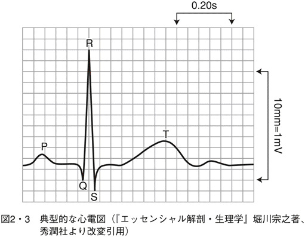
最初の小さな波であるＰ波は心房の収縮を示しており、その後の大きなＱＲＳ波（単にＲ波ともいう）は心室の収縮をあらわす。急激に大きく立ち上がっているのは、心室の収縮が短時間におこなわれている様子があらわれており、この瞬間に血液が全身に送り込まれる。Ｐ波がＲ波に比べてはるかに小さいのは、心房と心室の収縮の規模や状況を比較してみれば頷ける結果である。
これに対しＴ波は心室の拡張をあらわしている。丸みを帯びた山の形からゆっくりと拡張していくことを表現しているように見える。
アイントーフェンが最初に「心電図が心臓に起因する」ことを証明したのは、一番よく目立つＲ波が心臓の拍動に一致して出現することを根拠とした。そのＲ波は、一連の心電図波形の中でも中心的な存在であることがわかっていたのだ。いうまでもなく、心室から血液を送り出すことが心臓機能の「主務」だとアピールしているのである。
ところが異常な収縮やリズムの変調が起これば、たちどころに心電図の波形も異常となってあらわれる。
一番わかりやすいのが洞調律で、一つのＰ波と次のＰ波までの間隔が一定のリズムになっているかどうかを見ればいい。普通は、この間隔は平均の10％以内で変動する。しかし、これが20％も変動すれば、リズムがくずれているという診断になる。
このリズムが速すぎるのも遅すぎるのも異常だ。運動しているときや心理的に緊張すれば、リズムが速くなるのは、誰でも知っている。１分間のリズムの合計を心拍数というが、成人では60～１００回／分を正常としている。それ以下を徐脈、以上を頻脈とよぶ。
さらに、心電図の形状から容易に見分けがつくものに、狭心症や心筋梗塞のケースがある。これらのケースでは心筋の活動に異常を示すため、心電図上では、ＳＴとよばれる過程で特異な状況が出る。実際には、ＳＴレベルとよばれる基線に上昇あるいは降下が認められるものだ。
さらに、重症な兆候としては、心室細動というような放っておけない状況も、心電図上ではっきりと確認することもできる。心電図の形が崩れ、さざ波のようになってしまえば、心臓がブルブルとふるえているようにも見え、それだけでもただごとでないことを予感させる。
心臓が停止すれば心電図は一直線になってしまう。人間が生きているかどうかの判定で、これ以上明確なバイタルサイン情報はない。
「心電図」を読み取る機器
心電図を読み取るには、それなりの技術や機器が必要だ。アイントーフェンの心臓の電気現象発見から１００年余り、この技術は電気工学そのものの進歩と同調するようにして進化してきた。というのは、最初は真空管さえなかった時代からその測定がはじまったわけだが、今やＩＴという最新のテクノロジーも加わっている。
心電図を測定する機器は、その目的に応じて検査機器、モニタ機器、長時間メモリなどさまざまだ。とはいえ、基本技術は、体表から検知できるごく「微弱」な電位を効率よく検出して「正しく」表示または記録することにある。
「微弱」の程度をいうなら１ミリボルトくらいなので、外部からのノイズさえなければ、検出が可能となる。ただし、生の人体からの信号なので、安定してモニタして記録するにはいくつかの工夫が必要となる。
検出された微弱電位は「直流増幅器」とよばれるアンプで正確に増幅される。一般的にいうと本当の直流は増幅できないので、この用語自体にも不自然さが残る。ただし、ここでいう「直流」は極端にゆっくり変動する波という意味で、心臓に起因する電位の変動は緩やかであることをイメージすればよい。だから、その変動を正確にとらえるには、周波数の低い（ゆっくりした変化の）波まで正確に増幅するアンプが要求されることになる。じつは、ただの増幅器なのにこの技術は簡単なものではなかった。
生体からの電気信号は、心電図だけでなく、脳波や筋電図など多くの信号があるが、普通は周波数の低いものが多い。直流増幅器はこれらの信号を増幅するための必須の手段だが低周波ゆえの難題もあった。現在では一般的になった「差動増幅器」も、この問題解決のために開発されたものだった。
直流増幅器の技術はもう数十年も研究され、心電図アンプもすでに完璧なものだ、と考えられていた。だが、ここにきて、まだ改良の余地があることがわかった。ハード側の進歩とともにソフトとの理想的な役割分担による成果だ。ハード側での進化をいえば、小型・高性能化、しかもソフト技術との融合による最適化設計を可能としている。ＩＴ関連を基調とした技術革新の波は、こうした従来からの基本技術にも変化を及ぼしつつある。
ケータイでも確認できる
その好例といえるのが心電図をモニタする機器群での利用だ。写真２・４は、最新の心電図無線テレメトリーの一例で、胸に装着して心電図が送信でき、電池を入れても10グラムそこそこの軽さである。しかも、心電図アンプの性能そのものに加え、送受信機の性能もこれまでのものと比較して安定性が増している。
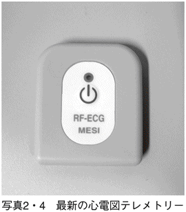
心電図の波形はさまざまな要因で、安定性を欠く。フワフワとした上下の動きや体の動きによるノイズなど、「波形がぶれる」こともある。ところが、こうした要因を取り除き、「きれいな心電図」をモニタすることが可能となったわけだ。
一例を示そう。普通、病院で心電図を検査するときには、ベッドで安静にしている状態で測定をおこなう。測定中に体動があると、ノイズが混入して安定した記録がとれない。ところが、この心電図送信機は小型なので胸につけるだけで測定できるため、電極コードで人体と装置が結びつけられることもない。しかも、測定中でも静かにしている必要がなくなった。というのは、内蔵している心電図アンプはノイズにも強く、動いているときでも測定できる。これまで難題とされてきた歩行中や体動があるときでも、安定して測定可能となったのだ。
さらにおもしろいことがある。これまでは、心電図がモニタできる装置といえば、病院や救急車などの専用のモニタ機器に限られていた。だが、この軽量送信機が発する電波は、２・４ギガヘルツ帯というケータイにも使われている電波帯で、ＵＳＢタイプの小型メモリチップ程度の受信機で受信可能だ。この受信機をウィンドウズ・モバイルがインストールできるケータイに接続すれば、この無線信号がキャッチできる。
つまり、ケータイの表示画面上で心電図の波形をモニタすることができるのだ。２・４ギガヘルツを利用したのは、これまでの心電図テレメトリーで使っていた電波帯を使うより、安定して通信が可能というメリットがあるからだ。写真２・５には、ケータイの画面上に心電図、心拍数などが表示される状況を示している。
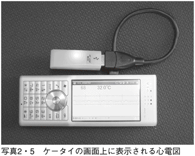
こうなると、病院を中心とした範囲内でのみチェックが可能だった心電図のモニタが日常生活の場まで拡大されることになる。通院している患者でさえ、自分のケータイで心電図が見られ、もし疑問があれば、そのまま病院にいる担当医のケータイに転送することさえ可能になった。
もちろん、病院内においても、緊急時などには医師が自分のケータイで入院患者の心電図などチェックできる。心電図テレメトリーの活躍の場は大きく拡大された、といっていい。
ホルタ心電計
38キロを背負う
人間がじっとしていて、しかも何の心配もない心安らかな状態のときには、心臓には負担がかからない。しかし、運動をしたり、もめごとにまき込まれるようになれば、心臓の鼓動はより活発になる。
じつは、心電図の検査はこうした日常の活動時や睡眠中などにも測定するほうが「実情」がわかるのだ。なぜならば、心臓の通常状態とは、静かにしているときでなく、むしろ働いている間や遊んでいるときのものと考えたほうがよい。人間に軽い運動をさせながら測定する心電図は、「負荷心電図」というよび方をされ、安静時心電図とは区別される。
負荷心電図を測るためには、一つだけやっかいな問題を解決しなければならなかった。それは、測定装置、すなわち心電計と被測定者を分離しなければならないのだ。測定用のコードで人間を縛りつけてしまえば、その人の活動が制限されてしまう。
アメリカの生理学者ホルタは、半世紀以上前に心電図を電池駆動の送信機で送信しようと考え、その試作機を完成させた。送信機が電池で動き、しかもそれ自体を体に装着することができればこの目的を達する。
とはいえ、試作した心電図送信機の総重量は電池込みで38キロにもなった。ホルタはこの大荷物を自ら背負って自転車に乗り、自分の心電図を送信することに成功した（写真２・６）。それは１９４７年、ホルタが33歳のときだったので、若い肉体を実験材料にして自分の心電図を送信するという夢が叶った瞬間だった。
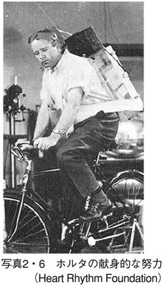
なぜ、そうまでしなくてはならなかったのか。当時の状況を考えれば、運動中の心電図をとろうとしても、大型の録音機や記録器など、とても自分で運べるような重量ではなかったのだ。送信機なら何とか運べそうだと考えたわけで、当時の「奇抜なアイデア」と賞賛したいところだが、それ以上に「苦肉の策」だった。
しかし、これがすぐに心臓病患者の負荷心電図測定には利用できなかったことも自明の理だ。実用にはならない「発明品」といえるが、このアイデアがのちの機器開発につながるきっかけとなったのである。
長時間心電図の父
ホルタの本当の夢は、24時間の心電図記録にあった。長時間にわたって記録可能となれば、短時間の心電図検査だけでは見つけられない不整脈などの異常心電図が見つかる可能性もあるからだ。
１９６０年代になるとオランダのフィリップス社が開発したカセットテープが実用化された。カセットテープは、音楽などの録音が可能でしかも小型で持ち歩けるという特長をもち、この時代の「録音」という技術を独り占めにし、世界的なヒット商品になった。録音機が私たちの日常生活に加わるようになり、しかも外出中にも利用できるようになったのは、カセットテープの出現があったからともいえよう。
ホルタは、これを心電図の長時間記録に応用しようと考えた。なにせ、40キロ近い送信機では負荷が大きすぎる。ただ、カセットテープを使ったとしても、さらにいくつかの課題があった。
まずは、録音時間が最長で２時間では話にならない。人間が一日の行動をしている間、連続記録したい。そこでホルタが考えたのは、カセットテープをゆっくりと回転させるというアイデアだ。心電図は、比較的低い周波数だけを含むと考えられていた時代のことなので、高い周波数でも１００ヘルツもあれば十分と計算した。
このアイデアは、カセットテープを通常の10分の１程度のスピードにおとし、はじめて心電図の長時間記録を可能とした。
のちに、ホルタの名は「携帯型の長時間心電図記録装置」の代名詞として使われるようになった。現在でも、「ホルタ」といえば装置そのものを指す。ホルタが「長時間心電図の父」とよばれるゆえんであり、「心電図の父」アイントーフェンと並び称される。
重さが３０００分の１になった
ホルタがカセットテープを流用して新しい装置を世に広めたとき、まだいくつかの不都合なことがあった。
一つは、重量が２００グラム程度あり、検査を受ける人が腰につけて持ち運ぶにしては、やや負担がかかることだ。それに、日常のふつうの動作の妨げになる。
もう一つは、夜間の睡眠中にカセットテープの回転音が安眠の妨げになることだ。昼間は気にならなくても、静かに寝ているときにはどうにも耳ざわりである、という欠点があった。
現在では、小型ハードディスクなどのＩＣメモリを利用することで、これらの難点は一挙に解決された。持ち運びが苦にならないうえに、騒音の問題もない。
写真２・７には、最新のテレメトリー式ホルタ心電計の一例（CarPod）を示した。前述した心電図テレメトリーの応用製品で、送信機から無線でホルタ心電計本体まで心電図信号を伝送している。送信機自身は電極そのものに貼りつけられるほどの重さしかないうえ、電極のリード線がないため煩わしさからも解放される。
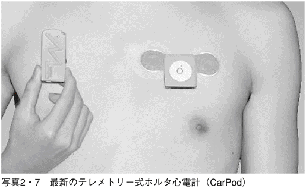
さらには、簡易防水構造になっているので、シャワーを浴びる間だけ本体部分を体から離しておけば、この間の心電図も連続して記録することができるようになった。
ホルタの背負った38キログラムと比較すれば、まさに隔世の感があり、事実、重さだけを考えても３０００分の１程度になったわけだ。
心磁計
人体内には磁界もある
電気と磁気とが深い関係で結ばれていることがわかったのは近代になってからのことだ。その発端は、デンマークの物理学者エルステッド（１７７７～１８５１）が一本の導線に電流を流すとその周りに磁界が発生することを見い出したことによる。このとき生ずる「磁界」が普通の磁石のＮ極からＳ極に向けてできている磁界と同じものだ、ということもわかった。
さらに、フランスの物理学者アンペール（１７７５～１８３６）が、電流が流れている導線の周りには同心円状に磁力線が描かれ、磁界の方向は右回りであることも明らかにした。電流の流れる方向をネジの進む方向に一致させると、そのネジの外側に右回りの磁力線ができる。ちょうど右ネジを回したときのネジの進行方向を電流の方向に見立て、磁力線の向きが回転方向になることから「右ネジの法則」の名がついた。こうして、電気と磁気は一つの法則のもとで結びついたと考えていい。
ところで、心臓の動力を明かす経過記録が心電図であることを述べた。その動力源は、細胞内にある電解質の流れである。心臓自身が一種の電動ポンプであって、これは細胞内外に微弱ながらも電気の流れがあることを意味する。
そこで、この電流に着目すると、電流の周りには磁界が発生することになる。いくら微弱な電流であろうと、右ネジの法則が適用されるからだ。この磁界は心筋の細胞を流れる電解液の流れの総和に影響され、それによる磁界の変化も発生する。心臓が電気で動くことも驚きだが、さらに磁気まで発生していると聞けば、二度ビックリということになる。
こんな極微の世界に興味をもち、果敢に測定を試みたのは、アメリカの学者コーエン（１９２２～）らである。
事実、コーエンはその磁界をいかに測定するかという方法論を見い出すことに努力した。心臓を流れる電流など無視できるほど微弱であり、ましてやそれから発生する磁界など、まったくとるにたりないほどの値でしかないはずだ。実際、心臓から出る磁気の大きさは、地磁気の大きさの１００万分の１程度しかないことも推定されていた。
たとえていうなら、騒音のひどいガード下で、蚊の飛ぶ羽音を聞くようなものだ。そんなことができるのかというわけだが、意志あるところに道ありともいう。コーエンは、かなり大げさなものになったが、地磁気を打ち消すための特別な磁気シールド室を作り上げた。ガード下に防音室を作り上げ、その中で蚊を飛ばせばいい、という考え方だ。
コーエンがはじめて心臓から出る磁気を測定したのは１９６３年のことで、その磁界は心磁図（ＭＣＧ）と名づけられた。磁気シールド内の測定とはいえ、超微弱磁界の測定は困難を極めた。だが、そうした難作業を克服して、コーエンは「心磁図」のしっぽをつかまえたのである。図３・１は、コーエンらが最初に心磁図の記録に成功したときの雑誌記事だ。
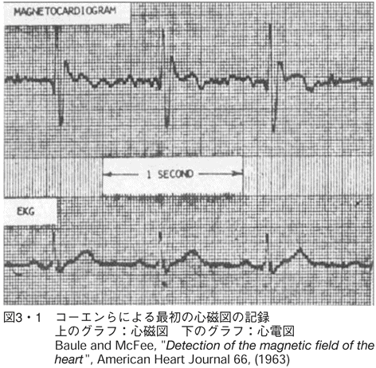
心臓の立体解析が可能に
squidという英単語は、海にいる「イカ」を意味している。この単語に引っかけて、ＳＱＵＩＤ（superconductingquantuminterferencedevice）という頭字語の意味する装置を「超伝導素子」という。
超伝導とは、温度を絶対零度近くまで下げると金属などの電気抵抗がゼロに近くなる現象であり、この性質を利用すると、思わぬメリットがあることがわかっている。たとえば、電気抵抗がゼロということは電流があっても電圧が発生しないことを意味する。そこで、超伝導リングを作ってその一部分を細くしておくと、この部分だけに通常電流による電圧が発生する。そこで、外部にわずかな磁界変動があると、この部分から電圧変化として取り出せるのだ。
磁気シールドに加え、このＳＱＵＩＤが心磁図測定の決め手となった。しかも、現代ではＳＱＵＩＤを使うと磁気シールドがなくても測定できることもわかってきた。これは、心磁図測定にとっても画期的なことだ。
なぜ、そんな微弱な信号が測定可能なのだろうか。ＳＱＵＩＤのセンサーとして、超伝導リングを使い、これを心臓の近くに置くことがポイントとなる。このセンサーを胸部の上に置けば、心臓に起因する磁界変動のみをつかまえることができる。つまり、地磁気はいかに大きくてもセンサーから見れば「遠くにある」と見なされるわけで、無視できるようになるのだ。
いくらガード下であろうと、蚊が耳の中まで入ってくればすぐに感知できるのと同じ理屈である。
さて、心電図が電気現象の記録であり、心磁図は磁界の記録である。しかも、心電図はより簡単に測定できるのに、わざわざ極く微弱な心磁図を測定して、何の意味があるのか。心電図だけで十分ではないのか、という疑問がわく。
心電図と心磁図の最大の違いをひと言でいえば、心電図はスカラー量であるが、心磁図はベクトル量である、という違いがある。もう少しくだいていうと、心電図は二つの箇所の間に発生している電位差であり、大きさだけをもつ数値だ。その数値が時間経過とともにどう変動するかというのが心電図のもつ基本情報である。
ところが、心磁図は大きさと方向をもつ数値（ベクトル）だ。こちらは時間経過とともに変動するだけでなく、場所の情報も含んでいるわけである。大きさとともに向きも示されるので、単純な数値情報でなく、立体的・空間的な情報が含まれていると考えればよい。
さらに、もう一つの特徴は磁力を発生している心臓そのものに近づくほど大きな信号が取り出せることだろう。したがって、場所や位置の情報が豊富に含まれることになる。
とくに有用なのは、左室や右室の肥大、心筋虚血、心筋梗塞などの疾患に関する情報である。こうした疾患では、心電図に比べて「疾患部位」に関して多くの情報提供に役立っている。
たとえば、心電図だけだと安静時の検査では狭心症の段階で見つけ出すことが難しい。ところが心磁図検査では、この段階でも検知できるため、病気が進行する前での治療が可能となる。また、着衣のままで検査できるので、患者の心理的負担も軽減できる。ただ、心臓の各部位をさらに詳しくチェックするためのＳＱＵＩＤは、多チャンネル（36チャンネル程度）のものが必要となる。
今後、心磁図解析の研究が進めば、これ以外の心疾患についても、スクリーニング的な役割を果たすことが期待される。これまで、心臓の電気現象を心電図をとおして分析してきたが、磁気について注目すれば、心疾患の早期発見に役立つうえ、新たな診断倫理の確立も期待できる。心臓を見る視点が増加すれば、詳細な心臓機能そのものの再発見につながることもありうるだろう。
血流計
心臓の「性能」をつかまえるには
心臓がどうして動くのかという原理が、少しずつ解明されてきている。心電図や心磁図の発見は、その「根拠」を証明するのに大いに役立っている。
心電図や心磁図が「原理的な情報」を提供しているとして、その目的や結果はどうなのか、という問いが発せられたとしよう。つまり「心臓の働きは何か」という質問と同じことだ。
小学生くらいになれば、「血液を全身に送り出すこと」という解答を出してくる。だが、一つの追加疑問が残る。「血液が正常に送り出されている」という実証はどうしたら可能か、という問題だ。
じつは、これを人体の外から測定または観察するのがそう生やさしいことではない。血液の循環する全身の血管系は、すべてつながっていて出口がなく、血流がまた元へ戻ってきてしまう。出口や入口がどこにもないので、流量計を接続するうまい方法が見つからないのだ。
そこで、この難題に挑戦している現代事情を記しておこう。とはいえ、そんなことができるのか、といぶかしがられるのがオチだろう。実際、心臓を血液ポンプとしてとらえたが、その性能を見るには、拍出される血液の量を測定してみたい。
医学では、１分間に拍出される血液の量を「心拍出量」とよび、単位はリットル／分であらわす。成人男子の標準値を示すと、安静時では１分間に５リットルくらい送り出されている。なお、心臓の一回の収縮で送り出される量はおよそ70ミリリットルで、湯呑み茶碗一杯分くらいの分量と考えればよい。こちらは「一回拍出量」といわれる。
１分間の心臓の拍動回数は「心拍数」または「脈拍数」とよばれるので、これらの関係を示す次の数式が成り立つ。
心拍出量＝一回拍出量×心拍数（脈拍数）
じつは、この数値はその人の身体的・精神的状況により大きく変化する。激しい運動時などには、心拍数も一回の拍出量も大幅に跳ね上がるため、その積である心拍出量は毎分30リットルにも達するといわれる。普段、静かにしているときには全能力のほんの一部しか拍出していないのに、ときにはその５～６倍の量をまかなえる。
この数値から類推すれば、心臓は単なる血液拍出ポンプでなく、いざとなればとてつもない力を発揮する「超ハイテクポンプ」といわねばなるまい。このことから逆の見方をすれば、この数値を的確にとらえることによって、ポンプの運転状況を詳しく分析できるわけだ。
血流を測る知恵
実際、心拍出量を測定する技術は、いくつかの方式で試されてきた。決して、いつでも測れる、つまり汎用とまではいかないにしろ、医療の現場では実用化されているものもいくつかある。
一つだけ、「熱希釈法」というユニークな技法を紹介しよう。文字どおりに解釈すると、「熱量を薄める方法」ということになる。
図３・２は、この原理を説明したものだ。血液は一定の温度に保たれているので、ヒーターなどで一カ所だけ暖めると、暖められた一部の血液が全身を巡る。だから、血管の下流で温度を観測すれば血流の様子を推定できる、というわけだ。
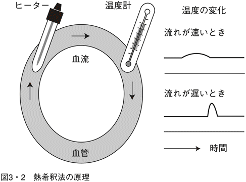
もし血流が速ければ、下流での温度上昇は早くはじまるが、その変化度合いはゆっくりとなる。しかし、血流がゆっくりならば、温度上昇は遅くなり、その変化度合いは急となる。こうして、温度変化を観察することにより流量が計算できるのだ。
ヒーターによる加熱方式に対して、微量の冷水を注入して血液の温度低下の状況から心拍出量を計算する方法もある。冷水方式は、測定精度が高い特長があるが一回しか測定できないのが欠点だ。これに対して、前者のヒーター方式は断続的に加熱すれば連続的に測定できる、というメリットがある。
さて、実際にはどういう装置なのかということをかいつまんで説明しておこう。じつは、動脈から心臓の内部までカテーテルとよばれる細いチューブを挿入する。心拍出量を測定するための特殊なカテーテルの先には、いろいろなセンサー類が配置されており、熱希釈のためのヒーターや温度測定用のサーミスターなども配置されている。また、圧力センサーによる血圧測定、温度センサー（サーミスター）による血液の温度測定など、多くの用途に使える便利さがある。
ただし、かなり大げさな装置なので、血液の流量測定が日常的におこなわれるものでないことが理解できる。本当に必要なときにだけ適用される高性能かつ高機能機器といえよう。
血圧と血流のシミュレーション
心臓から飛び出してくる血液の量を測る難しさは理解していただけただろう。それならばもっと簡単に測れる指標はないのだろうか。
ここで少し横道にそれる。ごく初歩の電気の話で出てくるのがオームの法則である。数式で書くと、
電流＝電圧／（電気）抵抗
誰でも知っている基本的な法則なので、詳しく説明する必要もない。ただし、文字にすると、電流は電圧が大きいほど、または電気抵抗が小さいほど多く流れる、となる。
じつは、血流についてもこれと似た数式を示すことが可能だ。
血流＝血圧／血管抵抗
同様にして、血流は血圧が大きいほど、また血管抵抗が小さいほど多く流れる。
このことからいえば、血流を知りたいときには血圧を測定すればある程度の予測が可能、ということを意味している。ただし、一つだけ断っておかなければならないことがある。電気回路における電気抵抗のほうは、普通は変化しない。しかし、血管抵抗は人体組織に関わる数値で、つねに変動するものなのだ。したがって、厳密にいえば、血圧の変化そのものが血流の変化に比例するというわけではない。
この点をわきまえておけば、血圧を知る意味も出てくる。
血圧計
血圧とは
いま、何の予備知識もないままに、「血圧」を登場させてしまった。心臓から拍出される血液の流量が一回拍出量であるのに対し、このときの血液の拍出される圧力を血圧という。
一般に血圧といえば、誰でもわかっているようだが、実際に詳しく理解されていない。普通は、心臓が収縮して、血液が出てくるときの最高圧力を血圧といっている。したがって、正確には収縮期血圧（あるいは最高血圧、最大血圧）という。これに対して、心臓が拡張したときには、血圧は最低値を示し、こちらは拡張期血圧（あるいは最低血圧、最小血圧）というよび方をする。
血圧の値は収縮期血圧と拡張期血圧の間を行き来するが、この差圧を脈圧といっている。つまり、血圧は経時的に観察すると一定の値でなく、つねに高い山と低い谷の間を上下していると思えばいい。谷の底も海から見れば標高があるので、その標高が拡張期血圧になる。したがって、谷の底から山のてっぺんまでが脈圧に相当する。
一番重要視されるのは、いうまでもなく収縮期血圧で、これが高すぎてもいけないし、また低すぎてもいけない。また、拡張期血圧にも標準値があり、こちらも適切な数値を保つことが望ましい。
世界保健機関（ＷＨＯ）では、収縮期血圧の正常範囲を１４０ミリメートル水銀柱以下、拡張期血圧の正常値を90ミリメートル水銀柱以下と定めている。
シルバーエイジといわれるほど老齢化が進む日本では、２００７年の時点で、１００歳以上のお年寄りが３万人を突破したという。この時代の健康管理でもいちばん話題性の高いものといえば「血圧」である。「血圧が高い」ということは高齢者にとって日常の話題ともなり、多くの人が気にしていることだ。成人病、老人病の代名詞といえよう。
収縮期血圧が１４０～１６０ミリメートル水銀柱の範囲は境界域高血圧といわれ、さらに１６０ミリメートル水銀柱以上の高血圧は要注意とされる。問題は、その数値がなぜそんなにも重要な意味をもつかということだろう。そこで、血圧値の異常について、少し前置きしておこう。
１４０ミリメートル水銀柱以上なら「高血圧」というレッテルが貼られるが、高ければどうなんだ、という質問が飛んでくるだろう。
数値だけをとらえるなら、血液が心臓から勢いよく飛び出すのだから、血圧は高いほうが健康的ではないか、と思ってしまう。しかし、血圧にも適正値があって、高すぎてもいけないということなのだ。人間の血管も、適当な圧力を受けられるような構造になっている。それが、いつも高い圧力を受け続ければ、ときには耐えられずに破けてしまうことにもなる。
これと反対に、血圧が低い場合、ふつう収縮期血圧が１００ミリメートル水銀柱以下のときには「低血圧」といって、やはり注意が必要となる。異常に低ければ、血液がよく循環しないだろうということが容易に想像できる。だから、こちらのほうもまずい。そう考えると、「血圧」は正常値を保つことが重要なのだと理解できる。
血圧計という装置の本質
血圧のことがわかってきたところで、それを測定するにはどうしたらよいか考えてみることにしよう。
だが、血管系が閉じたループであるかぎり、血流の測定と同様、血圧の測定もそう容易ではない。こう書くと、今の世の中には血圧計が数多く普及しているではないか、と反論する読者もいるだろう。ところが、血圧が簡単に測定できると思ったら大まちがいなのだ。
そもそも、ふつう血圧計と称する器具は水銀柱と腕に巻くカフ（腕帯）でできている。この器具はイタリアのリヴァロッチという医師が発明したもので、もう１００年以上も使われ続けている。こんな大昔の小道具なのにもかかわらず、この原理について何の疑問ももたず、今も世界中の医師やナースが利用し続けている。不思議なくらい、誰一人としてこのことに問題を提起していない。
それでは、１００年以上も使われている水銀血圧計の仕組みから紹介しよう。水銀柱には目盛りがつけられ、カフに繋がっている。カフには加圧用のゴム球がついていて、これを握るとカフに空気圧が加わる。この空気圧で上腕を締めつけることによって腕の血圧とバランスを取ることを目ざしている。
なぜ水銀が使われているかというと、これが必須というわけではなく、本当は水でもよい。しかし、水柱を使うとすると３メートルくらいの高さが必要となり、読み取るには梯子がいる。これでは実用的でないことが明らかだ。水銀だと20センチあまりの高さですんでしまうから、という理屈だ。もちろん、現代の世の中には圧力計が存在するので、こんな毒性をもった液体金属に頼る必要もない。
さて、医師やナースは患者の腕にカフを巻き付け、ゴム球で加圧する。これら三つの構成部品が完璧であれば正確に血圧が測れる、と思わないでほしい。医師の必携する聴診器つまり、測定者による「診断」が必要なのだ。この診断というのが、カフ圧と血圧がバランスしているかどうかを確かめることにある。
しかも、その判断材料が「コロトコフ音」という、これが音かと思われるほど微弱な音に頼っている。
血圧計というのは、そんな当てにならない「微弱な音」を唯一の指標として、血圧値を決定している、というのが偽らざる事実である。しかし、この音こそ金科玉条のごとく尊重されている重要な音なのだ。
カフに連結されたゴム球をキュッキュッと握り続けると、腕に巻かれたカフに空気が送られて上腕を締めつける。このとき、カフにかかる圧力を示すのが水銀柱の目盛りというわけだ。
さて、カフ圧を高くすると、腕に流れてくる血液の流れが妨げられるようになる。このとき、カフの下側、すなわち、血液の下流側に聴診器を当てると、何も聞こえない。次に、ゴム球のバルブを徐々に緩めていくと、ある圧力のところで「コロトコフ音」なるものが聞こえ出す。このときの値こそ、その人の収縮期血圧だ、という原理なのである。
さらに、圧力を低くしていくと、コロトコフ音は強くなって、大きく聞こえるようになり、やがてある圧力のところまで下げると、それ以下ではすっと消えてしまう。この消える圧力のところが拡張期血圧とされている。
世紀をまたぐ発見だが...
コロトコフとは、これも１００年以上前にこの音を発見した人名であり、その名が世に残ったロシアの軍医である。リヴァロッチ血圧計の発明とほぼ同じ頃に発見されたものだ。それまでは聴診器を使っていたわけではなく、指で脈が感じられるかどうか、というのを血圧測定の指標にしていた。
つまり、コロトコフ以前といえば、音でなく手首で感じられる脈を指先の感覚だけで触診し、血圧を測っていたと推定される。水銀柱とつながったカフに圧が加わっていけば、血流がさまたげられ、手首までは血液の流れが達しにくくなる、という想定だったのだ。
しかし、脈の強弱による測定法は、それこそ医師の指先一本の感覚を頼りにするわけで、自ずと限界もある。だから、コロトコフ音の発見は、それに比較してみれば画期的だった。しかも、この方法が今もそのまま利用されている。血圧計がなかった19世紀と血圧計ができた20世紀、といってもいい。さらに付け加えるなら、21世紀に突入した現在でも、この血圧計は延々と生き残る確率が高い。なぜ、こうした装置がそのまま生き続けられるのだろう。装置などというのがもったいないほどの「ただの道具」といったほうがいいくらいなのに。
その解答になりそうなのは、代替えがないということだろう。いまだに、これ以上の血圧測定の方法が見つからないのだ。
もう一つ考えられる。ただの道具といったが、血圧計という格好をしていながら、極めてソフト的なハードウエアである。重要な機能はここにあるのでなく、その性能は医師やナースの頭脳に頼りっきり、という特異な装置なのだ。そのため装置として改良の余地が見い出せないのである。こうした特異性が世紀の壁を越えて生き延びている要因といえよう。
血圧計は人間の認識能力が頼り
コロトコフ音がどういうふうに変化しようと、聴診器を使って聞いている医師の耳は、ちゃんとその変化を追いかけ、ほぼ確実に最低血圧を測定する。訓練や学習を重ねると、人間の聴覚やその認識力は、いっそう磨きがかかる。
その根拠の一つは、医師らの聴覚や認識力をマイクロフォンやコンピュータに置き換えようとしてみてはじめて実感できるものだ。
もう40年以上前の話になるが、私が新入社員だった頃、この世にはない「自動血圧計」という開発テーマを与えられたことがある。まずは、コロトコフ音を自動的に認識させる装置を考える必要があった。ところが、そんな生やさしいテーマでないということがだんだんにわかってきた。
最初に、コロトコフ音の音としての性質を捕まえようと必死になった。ところが、医師必携の聴診器を使ってはじめて聞いてみたのは、「音」とはいえないほどの「微弱な振動」程度のものだった。まるで遠くの寺からかすかに聞こえてくる木魚のようだ。聞き慣れた耳でなければ、これがそうだといわれてやっとわかるくらいの音なのである。
それを、機械に認識させようということのほうが虫がよすぎるというものだ。しかし、自動血圧計をものにしようとするなら、その難問に挑戦しなければならない。
それにひきかえ人間の音の感知力、判断力がいかにすばらしいか、というのをいやおうなく感じざるをえなかった。医師の頭脳を電気回路に置き換えるのは至難の業だった。
なぜ振動法なのか
この難題が自動血圧計の開発者たちに立ち塞がっていた頃、新しい方法がアメリカで開発されたというニュースが伝わってきた。コロトコフ音に頼らない、「振動法」とよばれる技法だ。
従来のコロトコフ音を利用する血圧測定には限界があることは明確であり、それを乗り越えるためのアイデアとして注目された。それは、カフ圧をコントロールすると、収縮期血圧や拡張期血圧付近で独特の「圧力振動」が生じることが見つかったのである。この振動は、コロトコフ音に比較して、安定してキャッチできることもわかってきた。だから、血圧を自動的に測定するという目的にはより適当と判断されたのだ。
音なら人間の聴覚のほうがすぐれているし、経験を積めば、聞きとる感度は飛躍的に増大する。じつは、医師や看護師は、熟練によってコロトコフ音を聞き分けるいわゆる「フィルタ能力」が備わっている。しかし、いくら高性能のマイクロフォンでも、こうした訓練を積めるはずもない。人間の耳には及ばないのが当然なのである。
「振動法」は、ここのところが一番違う点だ。微小な振動をとらえる能力は、人間が訓練してもどうにもならないようなところにある。しかし、微小な圧力変動をとらえることのできる高感度センサーは、現に存在する。人間がコロトコフ音をとらえる能力よりはるかに高いといえる。このことは、コロトコフ音で聞きわけるより何倍かの感度で血圧を測定するための標的信号をとらえられることを意味する。
そこで、振動法とはどんな方法で血圧をとらえているのかということを明らかにしておこう。それには、コロトコフ音法との比較をするのが手っ取り早い。
コロトコフ音法については、すでに説明したとおり、音の始まりと終わりで、収縮期血圧、拡張期血圧を決定している。
一方、振動法のケースでは、カフ圧による振動の変化の状況を観察するもので、決定方法にはやや曖昧さを残している。というのは、コロトコフ音法のように、「出た、消えた」という点がはっきりしているわけでない。収縮期血圧のほうは振動の振幅が「急に大きくなる時点」とされ、拡張期血圧のほうでは、振動が「変化しなくなる時点」をとらえることになっている。
これまで支配的だったコロトコフ音法による測定が、振動法主体に切り替わった最大の要因は、信号対雑音比率（Ｓ／Ｎという）が改善された結果だろう。コロトコフ音法で使用されるセンサー（実際にはマイクロフォン）は、カフとは関係ない別の部品であり、患者の動きや周囲雑音の影響を受けやすい。振動法の場合、振動をとらえるセンサーは、カフの圧力を直接感知することができるため、周囲の雑音などの影響を受けにくい。
振動法による血圧計の急速な普及は、これまでの不安定要素の含まれていた血圧測定に比べ、安定した測定が可能となったことによる。その陰には、ソフトウエア技術の向上を見逃せない。事実、コロトコフ音というはっきりとした指標をもつ手法に対して、振動法の判定法は計算というソフトに頼る割合が多い。いってみれば、振動法の曖昧さという弱点を差し引いても、よりメリットがある方法として確立された、といえよう。
高性能血圧計への道のり
一般の市場に出回っている血圧計も含め、ここに来てようやく実用になるものに進化したという感触だ。ただし、振動法にしても基本的に、一つの方法論的な性質であるかぎり、本質的な測定理論とはなりえない。
カフは腕に巻く方式が多いが、加圧を伴うこと自体もデメリットである。たとえ、手首や指で測定するケースであれ、コロトコフ音法や振動法を採用しているかぎり「加圧」なしでは測定できない。
最近になって、「トノメトリー」という別の方式のものが注目されるようになってきた。上腕ではなく、手首に巻き付けられるようになっていて、特殊な圧力センサーを備えた血圧計だ。脈を診るときに使う橈骨動脈にぴったり合うように設計されている。
この方式によるセンサー本体内には40ものセンサー素子が平坦に並べられ、そのセンサーアレイに適度の圧力を加える。これにより橈骨動脈を押しつけて、血管の一部が平らになるようにする。40個のセンサーがすべて同じ圧力になれば、血管が平坦になったことを意味する。このとき、平坦面方向には血管の張力がなくなったとみなされ、センサーアレイが動脈の圧力を直接受けられる状態になる（図３・３）。
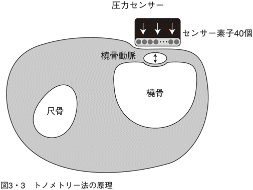
この状態で圧力を測り続ければ、橈骨動脈の圧力、つまり血圧を連続的に測定できる、という理屈だ。ただし、本方式もごく基本的な原理をいうなら、「圧力のバランス」を見ていることに変わりない。
ふつうの振動法では、一回の測定に数十秒程度の時間がかかり、連続測定は不可能だった。トノメトリーによれば、間接的な測定法にもかかわらず、連続測定という目標もクリアした。しかも、手首に加わる圧力もあまり苦にならない。
この測定方法による血圧値は、心臓が収縮したときに左心室から拍出される血液の圧力（中心血圧ともいう）にほぼ等しいということも立証されている。このことは、本来、心臓に直接カテーテルを入れて中心血圧の連続測定をおこなうのと等価の効果を生み出すことを意味している。
とはいえ、血圧測定に関し、非侵襲（生体を傷つけない）でかつ連続測定、使いやすく、しかも精度が保証されているというような方式の模索は、医療技術者にとっても、永遠の課題のように思える。そんなことが本当に実現可能になれば、ノーベル賞ものだ、ともよくいわれる。それほどに、夢のような技術なのだ。
トノメトリーは一つの道のりに過ぎないが、この夢に向かって一歩を踏み出した、ともいえる。
ごく最近、海外から別の方法論で実現したとのニュースもある。しかし、先はまだまだ遠い。一歩だけでは、目標値にはとても追いつかない。
血流測定や血圧測定は心臓のメカを解析するための一つの方法にすぎないが、それらの精度があがっていけば、少しずつであっても遠い目標に近づける。
血圧計はこんなに難題が多い、ということを書き連ねてしまった。最後に一つだけ新しい血圧計を紹介し、罪滅ぼしとしたい。
写真３・４は、血管の硬さも測れる日本精密測器製のVital Scope ＡＨ‐２００だ。「測れる」というと言い過ぎになるので、「推定できる」程度に言い直しておこう。この「血管の硬さ」や、すでに触れた「血管抵抗」などが数値化されれば、血圧計の価値が高まること請け合いである。血圧計の新時代を切り開く突破口となってほしいものだ。
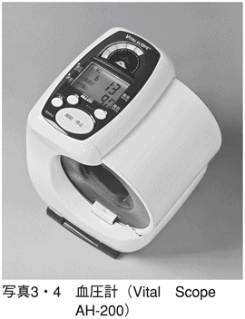
ＡＥＤ
機上での緊急アナウンス
２００５年11月、アメリカ心臓学会参加のためダラスへ向かう機上でのできごとだ。夕刻に成田を出発したアメリカン航空のジャンボ機上では、機内食のサービスもすんで消灯時刻になっていた。出されたワインが回ってきて、少しウトウトしはじめたときだった。突然の機内アナウンスが流れ、乗客の中に医師またはナースがいたら至急客室乗務員まで知らせてほしい、といっている。
暗くなっていた機内では、すでに就寝している乗客も多く、それ以上のことは何もわからなかった。数分の静寂の後、機内にやや緊張が走ったのは、大柄の女性アテンダントが二台のＡＥＤ（自動体外式除細動器 automated external defibrillator）を両腕で丸抱えにして足早に後方座席に向かったときだ。
ただごとでないことを察した機内では、私の周りの乗客も少しざわめいている様子。最近、日本でも地下鉄駅などの公共の場に設置されているＡＥＤなる医療機器（写真４・１）がどういう場合に使用されるのか、あるいはまだ大部分の乗客は知らないだろう。私自身は見慣れたものだが、使われようとする現場に居合わせたのははじめてだった。
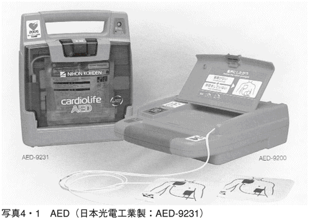
ここで、すこしばかり不謹慎な話をすることを、許していただきたい。じつは、この緊迫の場面にもかかわらず、私自身はプッとふきだしそうになった。普通、ＡＥＤは二台同時には使用しない。生死をさまよう急患に対して、イチかバチかの電気刺激を加えて危機一髪の救命を試みる、という方式だからである。
この状況から察するに、この女性アテンダントも初体験だったことは確かだ。ＡＥＤが機内に装備されるようになってからすでに10年以上になるが、使われるケースはまれなのである。
実際、このとき機上でＡＥＤでの治療があったかどうかは定かでない。約10時間後には、機体は乗り継ぎ地のサンノゼ空港に到着した。空港で待っていたのは、アメリカの救急隊だった。機長が成田へ戻る判断を下さなかったのは、バイタルサインの正確なチェックによりアメリカまで行き着けると考えたからに違いない。とくに、長距離飛行の場合には、急患を救急隊へ引き渡すまで、長い時間の救急救命措置が必要となる。
すでに数百回を超えているであろう私の搭乗履歴でも、最初に出合った救急救命の場面となった。救急とか患者のモニターといったものは、病院でのみおこなわれると思っていたが、身近な日常生活の場でも起こりうることを実感したものだ。
「救急蘇生」の新しい考え方
救急現場とは、前例のような緊急の場だけを意味しない。ときには、日常生活のなかで家族の一人が倒れることもある。そのような場面には遭遇したくはないだろうが、万が一のために、緊急時に備える心がまえも必要だ。
もしも倒れている人がいたとき、その人のバイタルサインが確認できないなら、一刻も早く蘇生を試みなければならない。
昔から民間に知られている蘇生法もある。呼吸が止まっているケースでは口移しの人工呼吸が、また、心臓が止まっていれば心臓マッサージをおこなわなければならない。しかし、訓練を受けていない限り、こういった救急蘇生は一般の人には不可能だろうし、いざ、そのような場面に遭遇しても、手も足も出ない、というのが実情かもしれない。
そうした場合への対応策として、最近では救急蘇生法の考え方が変わり、公共団体や一般市民へ向けての訓練なども普及しつつある。
何らかの事故や急病などで傷病者に遭遇した場合、まずは、意識があるか、呼吸をしているか、脈があるかの順にチェックをする必要がある。従来、こうした行為自体、救急隊が到着するまで、何もしてはいけないということになっていた。しかし、一刻を争うような緊迫した状況下で傷病者を放っておいては、助かるものも見殺しにしてしまうことになりかねない。というのは、もしも血液の循環がなくなっている状態になれば、脳は３分程度、心臓は20分程度で、機能が戻らない状況をきたしてしまう。救急隊が到着するまでの時間こそ、まさに貴重かつ重要な時間といえる。
そこで、最近では、救急車が到着するまでの数分間でも、一般民間人であっても救急蘇生を施すべきだという考え方に変わってきた。
救急蘇生法としての国際的なガイドラインも示されている。ごく新しいものは、「ガイドライン２００５」と題してアメリカ心臓学会とヨーロッパ蘇生学会から同時発表されたものがある。それには、いくつかのキーポイントが示されている。たとえば、まず傷病者の気道を確保するため「頭の位置を下げてあごを上に上げる」ことや、「人工呼吸の一回の空気の吹き込みには１秒以上をかける」、「心臓マッサージと人工呼吸の比率を30対２にする」などが盛り込まれている。
さらには、ＡＥＤに関する項目もこうつけ加えられている。一回のＡＥＤでの治療後、すぐに心臓マッサージを開始すること。それに、２分ごとにバイタルサインを確認することもすすめている。
ＡＥＤは、今やあらゆる公共施設や人の集まる場所にも設置されつつある。数年前、サッカーのコンフェデレーションカップが開催されていたフランスの競技場で、アフリカの選手が心臓疾患で急死した事故があった。その事故を教訓として、日本のサッカー場にもＡＥＤが設置されつつある。Ｊリーグのジェフ千葉の本拠地として知られるフクダ電子アリーナには、最新のＡＥＤが設置されている。
ここにきて、世界中で救急救命のあり方が変化しているのだ。
人を生き返らせる技？
さて、そのＡＥＤとは、心停止している傷病者に電気的なショックを加える治療器をいう。電気刺激といっても半端でない。心臓を挟む位置に二つの電極を貼りつけ、通常数千ボルトの高電圧を、瞬時的にドンと加えるのだ。まさしく、「ショック療法」に違いないが、心停止者に対しての現在では唯一無二の治療方法でもある。
心停止とは、心臓がポンプの機能を失う状況を意味し、主として二つの場合に分類される。一つが心室細動で心室がブルブルと震える状況に陥った場合、もう一つは、無脈性心室頻脈といって、やはり血液が送り出せない状況をいう。
いったん停止した心臓に大きな電気刺激を加えてその働きを取り戻すというのが、ＡＥＤの基本的な原理である。それでは、ＡＥＤの前身であるデフィブリレータ（通常の手動の除細動器をいう）の発想はいつ頃からあったかを述べておこう。
多くの医療技術がそうであるように、心臓マッサージや電気刺激を用いる心臓蘇生法も経験から生み出された。19世紀半ば、世界ではじめてエーテルを用いて全身麻酔による手術をおこなったのはアメリカの病院である。初期の頃の麻酔術においては、手術中に心臓が止まってしまった事故も数多く記録されている。
その頃から、予期せぬ心臓停止事故に際しての対応策がいくつも検討された。その一つが心臓マッサージであり、もう一つが電気刺激法であった。これ以外にもエピネフリンとよばれる薬液の投与や単に心臓に針を刺してみるといった直接的な刺激などもある。
じつは、長い間、開心術はおろか、心臓の手術などというものは不可能とされてきた。紀元前のアリストテレスの時代から、心臓だけはいったん傷ついたら最後、治療できない臓器と決めつけられてきたのだ。つまり、心臓にメスを入れることなど、まったく想像外の時代が続いていたのである。
はじめて、心臓マッサージによる心臓蘇生に成功したのはノルウェーの医師で、20世紀になってからのことだ。心臓以外の臓器に異常のないケースでは、停止した心臓がマッサージという手技により回復することが立証されたことになる。
これに対して、電気刺激を用いて心臓機能を復活させるアイデアは、すでに16世紀頃からあったとされる。しかし、本格的な試みがはじめられたのはアメリカで、１９２０年代になってからだ。ただし、実際に成功するのは１９４０年代になるまで待たなければならなかった。製品としてのデフィブリレータが開発されたのはやはりアメリカにおいてであり、１９６０年代になってからのことだ。
こうして歴史を振り返ってみても、人間を生き返らせる技も試行錯誤の連続だった、といえる。いったん停止した心臓を「何が何でも復帰させたい」という人類共通の強い意志のあらわれとみるべきだろう。
その対応策の切り札として登場したのがＡＥＤなのである。
ガルバーニのカエル再出演
心臓蘇生法についていうなら、それが行き当たりばったりの連続でしかなかったことには、それなりの理由があった。なぜなら、心臓の拍動そのものがどういう原理によるものなのか、という疑問が長い間解けなかったからだ。拍動の理屈がわからないのに、停止した心臓を蘇生させる技術を見い出すのはかなり難しい。
ここで再びガルバーニのカエルの話を思い出していただきたい。
すでに述べたとおり、異種の金属に挟まれたカエルの足は、発生した電圧によりブルブルと痙攣した。つまりは、外部から加わった電圧によって足の筋肉が収縮したわけだ。
一度止まった心臓を動かすのも同じ方法による。ちょうどオン・オフのスイッチのように、心臓を挟むようにして両側の電極から電圧を加える。痙攣を起こして止まっていた筋肉が、また収縮して動き出すのだ。心筋の一つひとつが勝手な動きをしていて統率が取れていなかったのに、一回の電圧を加えることによって統一した動きを呼び戻す、と考えればよい。だから、「細動を止める装置」デフィブリレータとよばれたのである。
ガルバーニのカエルの実験は、偶然にそうなった確率が高い。だが、現代のＡＥＤこそデフィブリレータの自動化された機種であり、その源流はこんなところにあったというわけだ。
図４・２は、ＡＥＤなどのデフィブリレータの基本的な原理図を示す。３０００～５０００ボルトほどの高電圧をコンデンサにチャージしておき、スイッチが入ると、心臓をめがけてドンと数十アンペアほどの電流が送り込まれる。生命を救う機械なので、複雑な構造をしているのかと思いきや、その想像をこえて、じつに単純な原理である。
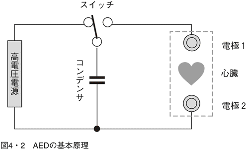
時代の異端児ここにあり
今では、心臓の電気現象が心臓機能と深い関係にあることが解明され、心臓停止とか心室細動を起こした患者をどう助けるかという対応策も考えられてきた。
ＡＥＤなどのデフィブリレータの研究は、心臓の電気現象を理解したうえでどうすれば心室細動が止められるか、あるいは心停止から心臓を復帰させるのにはどうすればよいのか、という基礎的な理論に基づいている。
とはいえ、デフィブリレータという数キロボルトもの高電圧を加える手段は、いかにも荒っぽいように思える。英語では、別名、カウンター・ショック（Counter-shock）ともよぶ。心室細動のように、心室の各部位が統率の取れないまま、不規則に震えている状態にあるとき、強引に一発の電気ショックを食らわす、といえばよいだろう。サッカーの試合でもカウンターという素早い逆襲があるが、それにも似て、一気に心室全体に電気的リセットをかける。こうすれば、右往左往していた心室の各部位が一斉に整列するようにしむけられるわけだ。
１９６０年代の終わり頃だったように記憶するが、私自身も入社して間もなく、別の部署でこの装置を開発しているのを目撃したことがある。そのときから、このとんでもない手法についての話を知っているわけだが、当時、「ドカン」という異名が与えられていた。すでに、理論的に理にかなった真っ当な手法として万人に認められているが、数ある医療機器の中でもこの時代を風靡する風雲児的な存在になった。
このＡＥＤは病院においておくだけでは意味がないのだ。「このときに、この場所で」しか存在価値のない特異な医療機器なのである。
重要なのは心電図による確認
さて、いざという心室細動のようなときには、デフィブリレータが有用であることが理解できたが、実際に細動を起こしているかどうかは、心電図でも記録してみないかぎり断定できない。たとえ心停止のケースでさえ、そう簡単には判定できないし、それこそ慎重を期すべきだ。
最悪の場合、万が一、心臓が正常に動いているのに、脈が感知できないからという理由だけで、デフィブリレータを起動してしまったら、動いている心臓を止めてしまうことにもなる。そうした誤作動を防ぐ意味からもＡＥＤは「自動体外式除細動器」という名称のとおり、胸に貼った専用の電極から、自動的に心臓活動電位を検出する機能を備えている。
心臓活動電位を検出して患者をモニタする機器は、通常「心電図モニタ」とよばれる。心電図が正常かどうかをモニタするものなので、ＡＥＤによる電気刺激が必要かどうかを入念にチェックするには必須の機械である。心臓活動電位が正常に検出できれば、ＡＥＤのモニタ画面に心電図として描かれ、この場合には、決して電気刺激は発せられない。ところが、心電図が完全にフラットであれば心停止の疑いが強い。また、細動であれば、心電図は小刻みな波形を呈するので、画面上でも確認できる。
こうした操作者の診断と、ＡＥＤ本体内での自動プログラムにより、はじめてＡＥＤから電気刺激が加えられることになる。
ＡＥＤの実施は、一刻も早くおこなうことが人命救助に有効であることはいうまでもないが、それとは裏腹に、その行為にいたる決断は、慎重のうえにも慎重を期す必要もある。そのために利用できるのが「心電図モニタ」の役割であり、こういう場面での貢献度は計り知れないものがある。
実際、ＡＥＤでの電気刺激後、心臓が再び動き出したことを確認するのも、また心電図による。つまり、「心臓が戻った」という表現がされるが、電気刺激後のバイタルサインの確認とは、実際には「心電図モニタ」による確認を意味している。
東京マラソンでのＡＥＤの活躍
２００７年２月、首都圏を市民ランナーが走れるという鳴り物入りのイベントが人気をよんで、定員の10倍もの応募が寄せられたという。日本のマラソン大会史上でも類例をみない多彩な企画が、多くの話題をよんだ大会となった。抽選で選ばれたランナーも３万人、と可能な限りの参加者数が設定された。
真冬の低温環境は想定内であったとはいえ、あいにく、前夜からの雨が朝になってもやまず、ランナーの体温を奪う。42キロあまりの長距離を走り抜くには、あまりにも過酷な環境と思われた。
マラソン大会でのはじめての試みとして注目を浴びたものの中に、話題のＡＥＤの登場があった。マラソンコースに沿って、約１キロごとに40台あまりのＡＥＤが置かれていたのだ。本来なら、こういった危機管理を担う機器が活躍すること自体も問題だが、それまで準備して挙行するという体制も評価すべきことなのかもしれない。
結論を先に明かしてしまうと、参加した約３万人のランナーのうち２人のランナーがこのＡＥＤのおかげで一命を取り留めたのだ。あまり大きく報道されなかったものの、この事実は今後の大会への指針とともに警鐘を与えてくれた、といえる。
ＡＥＤの活躍ぶりが思いのほか大きいことになれば、そこまでむやみに多くの人を参加させてよいのか、との議論をよぶだろう。だが、２名でも、いやたとえ１名でも、尊い命が救われたことを考えれば、その装置の価値は計り知れないものとなる。
心臓ペースメーカ
はじめての人体実験
ＡＥＤ操作における心電図の位置づけがいかに重要かということは理解できた。さらにもう一例だけ、これに関連する医療機器について触れるなら、「心臓ペースメーカ」をあげることになる。これも心電図の解析から生まれた医療技術だ。ＡＥＤより先行して、あるいは同時進行といっていいくらいのクラスメート的な存在でもある。しかも、今や一般市民におなじみの医療機器となれば、この二つをおいてない。
心臓への電気刺激という手法は同じでも、普通の心臓ペースメーカは体内に植込むものが多い。しかも、洞結節からの信号が出にくい疾患に適用されるので、心臓に直接電極をつけてそこから微弱な電気刺激を加えている。この場合も、心電図を自動検出して正常かどうかを判断し、むやみに電気信号を加え過ぎないような工夫も加えられている。
ところで、工学の分野において半導体技術が世に認められたのは、ソニーがトランジスターラジオを発表した１９５５年頃からだ。それからたった３年後に、世界ではじめて人体に植込まれたのが「心臓ペースメーカ」である。半導体という固体電子素子のサイズが人体内にまでも入りこむことを可能にしたことになる。
心臓ペースメーカの第１号は、その頃の先端技術であるシリコン・トランジスターをたった２本だけ利用したものだった。その技術もさることながら、最大のトピックスは、生身の人体内にはじめて「機械」を組み込んだことによる。これぞ人体実験という以外の何ものでもない。世紀の人体実験に踏み切ったのは、スウェーデンの首都ストックホルムにあるカロリンスカ研究所だ。
当時、43歳だった患者は、アダムス・ストークス症候群という重病の発作に苛まれ、心拍数は30回／分程度にまで落ちていた。普通の人の半分以下だ。担当したのは、心臓外科の医師セニングと医療機器エンジニアのエルムクビスト。記念すべき日となったのは１９５８年９月８日とされる。手術はあえて外部への公表をさけるため、その日の夕方から秘密裡におこなわれ、夜を徹して実行された。
装置内のトランジスターを作動させるために、外部から充電可能なようにニッケル・カドミウム電池が使われていた。あとになってわかったのだが、最初に植込まれた機器は８時間足らずでストップしてしまったらしい。途中で電気メスを使用したことが故障の原因と推定されている。すぐに、用意されていたバックアップ機と交換され、ことなきをえたという。まさに、産みの苦しみを地でいくような話だ。
幸いにも、この最初の体内機器が今日の心臓ペースメーカの先駆けとなった。この患者はその後、生き続けて、２００１年に86歳の生涯を閉じた。この間に、体内のペースメーカは20種以上も置き換えられたという。
事実、自分の体内をペースメーカの見本市として提供したわけで、そのことで自身の生命をちょうど２倍に延ばしたともいえる。
アメリカ中心の心臓ペースメーカ
人類初の植込み手術がおこなわれた頃、アメリカのメドトロニクス社では、創始者のバッケンが体外式ペースメーカの製造を準備していた。植込み式に対し、体表の電極を介して電気刺激を加える方法だ。
バッケン自身が開発したトランジスター式ペースメーカは、その設計の動機が風変わりだった。バッケンの設計は、当時の音楽用メトロノームを単に真似たものだった。真似たというより、雑誌に載っていたトランジスター式のメトロノームの回路そのものをちゃっかり流用しただけで、その中からスピーカを取り除いたら、ペースメーカができてしまったという。
幸運にも、メトロノーム自体はレート（速度）が調節できるようになっている。だから、ペースメーカのレートを変えるのも、そのままの回路でどんぴしゃりだったというわけだ。
体外式というのは、利点もあるし欠点もある。ペーシングのコントロールがしやすいし、電池の消耗の心配もいらない。だが、つねに患者の近くに置いておかなくてはならないので、行動の制約も大きい。
１９６０年、メドトロニクス社でも植込みタイプの生産を開始することを決定した。先のカロリンスカでの成功がこの決定の後押しをしたことは想像に難くない。これを機に、新しいペースメーカの時代が開幕する。21世紀の現在になっても、この生産がきっかけで、世界の市場をリードしているのがメドトロニクス社をはじめとするアメリカのメーカーである。
ペーシング技術の進化
初期の植込み式ペースメーカは、心拍数が極端に少ない徐脈性不整脈や、徐脈に基づく心不全への対応処置を目的としていた。これらの患者は、心拍出量の低下がみられ、脳虚血やめまいなどを起こす。第一世代の製品はこうした患者を対象としており、毎分60～70回の一定周期でしか電気刺激をあたえられなかった。
一番問題なのは、受攻期（Ｔ波の頂上付近）とよばれる心室の興奮しやすい時期に刺激を与えてしまうと、危険な状況を生み出すこともわかっていた。この対応策として開発されたのがデマンド型といわれる方式だ。いってみれば、「必要時期だけに限定して」ペーシングがおこなわれるもので、これは第二世代の改良型でもある。
これらは、いずれも心拍数の少ない症例への対策だったのに対し、逆に心拍数の多すぎる頻拍を対象とした、抗頻拍ペーシングの技術も実現した。
当然のことながら、半導体などの電子技術の進歩が後押しをして、本体の小型化、電池寿命の延長などに寄与してきた。
ただし、ペースメーカ技術の最大の課題は、患者のＱＯＬ（生活の質）の向上に主眼をおくことだった。具体例でいうなら、一人の患者の生理状況に合致したペースメーカの要求だ。
一般的には「生理的ペーシング」といえば心房・心室ペーシングを時間をおいて別々におこなうことを意味している。このため、房室連続型のペースメーカは、電極リードを２本もっている。正常な人の刺激伝導系が適当な時間差を有することを述べたが、このペーシング技術も、房室伝導時間に相当する時間をおいて刺激されるようになっている。心房の収縮と心室の収縮のタイミングがよければ、心拍出量が数十％ほど増加するというデータがある。
最近になって、心臓再同期療法とよばれる方式で、心房用のリードと両心室用のリードの合計３本を備えている方式のものが出てきた。両心室あるいは左室のペーシングが可能で、新たな療法として注目されている。
写真４・３はドイツ・ビオトロニクス社製のペースメーカで、最近のモデルＰｈｉｌｏｓII（輸入元・日本光電工業）である。このペースメーカは、心室ペーシングの最適化という課題に対しての対策がとられている。そのため、ＡＣＣ機能と称し、一拍ごとに心室ペーシングが有効かどうかをチェックしている。万が一、ペーシングが不調に終わったようなときには、素早くバックアップパルスを出して心拍を確保する方法だ。
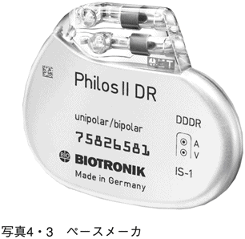
また、心房から心室への刺激伝導について、あくまで患者自体の伝導を優先している。もしも、この伝導が途絶えたときには、最適な伝導時間を設定して心室を刺激するパルスを発する。さらには、患者の自己心拍が急激に低下して、めまいや失神を起こすことを防ぐため、徐々に心拍数を減少させて対応する方式も組み込まれている。
こうしたペースメーカの技術は、患者がより快適な生活ができるように考え出されたものである。
ＩＣＤの導入へ
ＡＥＤが体外からの電気刺激であり、心臓ペースメーカは体内電極による電気刺激だ。この二つはクラスメートと表現したが、二つを合体したようなものもあり、こちらはＩＣＤとよばれる。いわば、体内植込み型のＡＥＤと思えばよい。
ペースメーカ技術につぎつぎと新しい方式が導入されていったのにもかかわらず、ペーシングによる電気刺激では心室・心房の細動を止められないこともわかってきたのだ。こうした致死性不整脈といわれる心室細動や発作性心室頻拍に対し、有効な療法を考えついたのはポーランド人のミロウスキーだった。
ミロウスキーは、自分のかつての上司が心室性頻脈で突然死を遂げた体験から、こうした患者を救う道は、体内に心細動除去装置を植込む以外にはないと発想する。
この発想のもとに、１９８０年にはじめてアメリカのジョーンズ・ホプキンス大学病院で、患者の体内に小型の自動心細動除去装置（ＡＩＣＤともいう）が植込まれた。
ＡＩＣＤは、心停止などによる突然死を未然に防ぐのに役立つ。とくに、抗徐脈ペーシングとの組み合わせ治療により、さらに効果が期待できる。
心臓をサポートする電気刺激の手法は、じつに単純なテクノロジーを基本としている。だが、その展開については各社が先を争うかのごとく、いまだ現在進行形なのだ。
パルスオキシメータ
「出産」というドラマの舞台裏
昼となく、夜となく、それこそ終日、「休息」という文字を知らない心臓の働きぶりには、誰もが感謝の念をもつべきだろう。いや、終日というより、心臓は生まれる前から動き続けている。
この心臓と対比して考えなくてはならないのが肺の動きである。ご存じのとおり、母親の胎内にいるときには、肺はまったくビクともしていない。母体からの血液の恩恵に浴して十分な酸素をもらっているので、胎児の肺自体は何の活動もする必要がないのだ。
ところが、生まれた途端に自力で酸素を確保しなければならなくなる。通常分娩では、生まれるときに狭い産道でギュッと押さえつけられてやっと出てくるので、肺の中に入り込んでいる羊水は外部に吐き捨てられる。その結果、肺は一時的に陰圧になり、それと同時に外気に触れて空気が肺に流入する。「オギャー」という第一声は、空気が入り込んで、はじめて呼吸が開始された証拠である。
この最初の呼吸こそ、その人にとっては、非常に重要な意味をもっている。もしも、最初の呼吸がはじまらなかったら、この世に生を受けたことにならない。
「オギャー」という第一声こそ、水中の生活から気体中の生活へ「変換」できたという証明なのだ。それゆえに、この最初の産声はファースト・バイタルサイン、いわば「最初の生きている証」そのものであり、まさに貴重な叫び声でもある。
ところで、五体満足で元気な赤ちゃんなら高らかな第一声とともに生まれてくるが、必ずしもすべてが元気な新生児ではない。一例をあげるなら、呼吸をするための肺の準備が追いつかないこともある。
じつは、出産の過程こそ驚異に値することばかりだ。
哺乳動物が水中の生活に別れを告げ、陸上での生活をはじめるには長い年月を通じて、その適応性を模索し、長期プログラムのもとに順化の道をたどって来たに違いない。進化や順化と簡単に表現してしまえばそれまでだが、陸上の生活では空気中にある酸素をどうやって取り込むのかが最も難問だったはずだ。とはいえ、その問題解決には、数万年、いやもしかしたら数億年という、超長時間の猶予期間を与えられていた。そうした長期間をかけて、難関ともいえる課題をゆっくりと解決していけばよかったわけだ。
ところがどうだろう。この永遠の課題を、「出産」という数時間のうちにやってしまうというのは、芸術的であり、まさに離れ業なのだ。
そのため、無理難題も散見される。
具体例をあげる。たとえ正常な新生児として生まれてきても、突然、「空気を肺に入れて、酸素を血液中に取り入れる」作業を強いられる。胎内では、母体から供給されていた血液はすでに十分な酸素を含んでいるため、当然のことながら、肺へは行っていない。胎児のときには、肺動脈と大動脈の間が「動脈管」とよばれる血管で連結されている。肺へ行くべき通路に仮のバイパスができていたわけだ。さらに、右心房と左心房の間には「卵円孔」とよばれる通路があって、血液は右心房から直接左心房へ流れていた。
ところが、生まれた途端に突然の経路変更が命じられる。これまで開いていた動脈管や卵円孔が生まれて数時間のうちに閉まるのだ。自動的に、しかも瞬く間といっていいほどの早業で。
かくして、生まれたての新生児の体内では、想像もつかないような急変が起きている。「オギャー」という第一呼吸に合わせて、バイパスを閉じられた血液がどっと肺へ流れ込む。外から見える明らかなファースト・バイタルサインに隠されて、生まれたばかりの赤ちゃんの体内では、血流のルート大変更という異変が起こっている。その舞台裏の現場では、深夜の水道管ルート変換工事といえるような、まるで突貫工事そのものなのだ。
未熟児の挑戦
その難題に輪をかけるのが未熟児である。未熟児とは、月足らずの赤ちゃんであり、産声さえままならないことも多い。一番問題なのは、本当はまだ水中で過ごすべき期間なのに、急に空気中に放り出されるので、環境適応が難しいのだ。
事実、未熟児とのことばどおり、すべての器官が未熟だが、とりわけ機能不全なのが肺である。
正常新生児でも、突然の環境変化と自身の適応体制がスムーズにいくとは限らないのに、準備不足の未熟児にその対応を迫るのだからたまったものではない。排水設備も整わないところに大量の水が流れるようなもので、厳しい条件設定というべきだろう。
未熟児の管理でもっとも重要なのが呼吸管理であることは、新生児をケアする小児科医の最重点課題でもある。つまりは、未熟児にとって難関な「息を吸えるかどうか」という根本的な障壁に対する挑戦でもある。息さえ吸えれば、空気中での生活に耐えられることになるからだ。
肺の中には肺胞と呼ばれる組織があり、それは小さな風船が集まったようなイメージだ。空気を吸うと膨らむようになっているのだが、未熟児のそれはうまく膨らまないという難点もある。そこを何とかしようというわけだ。
血液中に酸素は十分か
新生児の肺を引き合いに出して、人間の呼吸機能について考えてみた。引き続いて、その働きをどうチェックするかを考えてみよう。
呼吸機能が正常かどうかという検査は大ざっぱな見方をすれば二つに分けられる。一つは、空気がうまく肺の中に吸い込めるか。もう一つは、その空気の中から酸素を血液内に取り込めるか。どちらも大切なチェック項目だが、本当に必要な検査項目をどちらか一つだけに限定するなら、後者の「血液中に酸素が適量に存在するか」どうかで代表できる。だとすれば、肺がうまく働いているかどうかは、まず血液中の酸素含量を測ってみればいいことになる。
さて、そうはいっても血液中の酸素量をどうやって測るかとなると、そう手軽な方法はありそうにない。事実、過去においては、そのために実際に血液を採取して、直接測定するしか方法がなかった。直接測定なら、測定値も確かなものが得られ誤差も少ない。だが、いちいち血液採取しなければならないとなると、かかる手間もさることながら、得られたデータは「そのときの値」だけで、その数値が時間的にどう変化しているかがわからない。それでは、あまり役に立たない。
では体の外から血液中の酸素をどうやって測るか、というテーマが長い間研究されてきた。そのために幾多の研究者が努力を重ね、試行錯誤がくり返された。
ヘモグロビンの酸素運搬
「血液中の酸素の話」をする前に、一つだけ頭の隅においてほしいことがある。それは、血液が酸素を運んでいるということの認識についてだ。
「ヘモグロビンが酸素と結びつく」事実を発見したのはドイツの化学者マイヤー（写真５・１）で、１８５７年のことだった。今なら子供でも知っている常識ではあるが、血液中のヘモグロビンという物質が酸素と結びついて運搬するというのは、当時としては、突飛な理論だったに違いない。
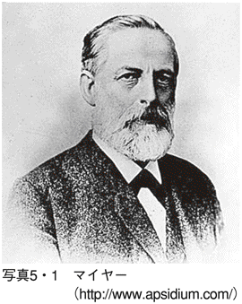
マイヤーが酸素とヘモグロビンの結合という事実を発見する動機となったのは、彼の東南アジアへの旅行だったといわれる。東南アジアに住む人びとの顔色がヨーロッパ人より赤みを帯びていることを見て取った。そのときにマイヤーのいだいた疑問は、血液の赤さが何を意味するかということだった。その疑問からのインスピレーションがヘモグロビンの酸素運搬の発想だったというのだ。
今では、血液中のヘモグロビンが酸素に接すると赤くなることがわかっている。血液中に含まれるヘモグロビンは、酸素と結合すると酸化ヘモグロビンとなり、赤く変色する。動脈血は酸素を十分に含んでいるため赤く、逆に静脈血は酸素を放出してしまうので黒ずんでいる。酸化ヘモグロビンが血流にのって全身に酸素を運搬する役目を演じるのだ。組織内で酸素を放出すると、ヘモグロビンは赤い色も失う。
余談になるが、マイヤーにはもう一つの重要な発見があった。それは、元素の周期律に関する発見だ。実際には、こちらの偉業はメンデレーフという人のものになっているが、マイヤーはその数年前からアイデアをあたため、独自の周期律表を作ったのも一年早かったとされている。しかし、こちらの業績はメンデレーフにもっていかれたため、彼の業績としては「ヘモグロビンの酸素結合理論」が有名になり、もちろん偉大な大発見として称賛されることになる。
この発見から導き出された最も重要な点は、肺の機能と心臓の機能が切っても切り離せない関係にあることを明らかにしたことにある。すなわち、人体機能の中でも基本的な働きである循環と呼吸が、不可分の関係にあることが判明したのだ。つまり、心臓と肺は勝手に動いているわけでなく、相互援助のもとに協力し合っていることがわかったのである。
血中の酸素をどうやって測るか
それでは、生物が生きてゆくうえでの必須条件である「血液中の酸素の存在状況」を測定するにはどうしたらよいのだろう。
現代の測定法の中で画期的な方式が第１章で前述のパルスオキシメータによるものだ。日本の技術者・青柳卓雄博士（写真５・２）によって開発されたもので、現代の医療の世界ではなくてはならないものとなっている。測定はごく簡単で、光に反応するセンサーを指などにつけるだけだ。
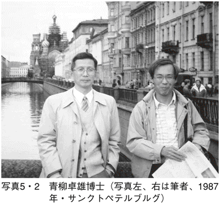
まさかと思う読者もおられるかもしれない。そんな簡単な原理の装置で、血液の中にとけ込んでいる酸素が本当に測れるのか、という疑念がわくほうがむしろ自然なことだろう。
要は、パルスオキシメータでは血液が赤いかどうかを測るだけの話である。ごく根本的な話になるのだが、赤い色をしているものは赤色光を吸収していないというわけである。何ということはない、ただ指の皮膚のうえから赤い光を当ててみて、血液で吸収される割合を見るだけで済んでしまう。赤い光を吸収してしまえば、その血液は酸素を含んでいないことになり、逆なら含んでいる、というわけだ。
図５・３は、パルスオキシメータの原理の概要が示してある。酸素を多く含んでいる血液に赤い光を当てると（左側）、多くの光が通過してゆく。これに対して酸素の少ない血液に光を当てても（右側）、光の通過が少ない。通過する光は、ともに脈動しているがこれは動脈が脈動しているからだ。逆にこの脈動部分だけに注目すれば、「動脈による光の脈動をとらえられる」というパルスオキシメータの二つ目の基本原理となる。
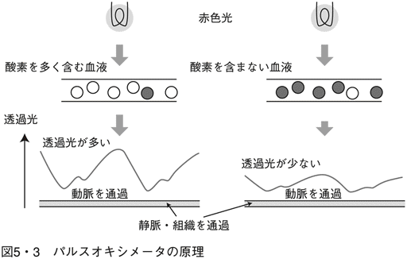
ちなみに、赤い光は静脈や組織も通過するが、その割合は一定である。
パルスオキシメータのパルスとは、この脈動をとらえられることからつけられた名称なのだ。実際の測定には、もう一つの目に見えない光である赤外光も使われている。
第１章の写真１・３に示したのが簡易型のパルスオキシメータの一例で、日本精密測器製である。ライター程度の大きさで、血液中の酸素の含有値が測定できる。正確には酸素飽和度という数値が使われる。血液中に目いっぱい含むことのできる値を１００としたときの酸素含有量がパーセンテージで表示される。
操作方法もいたって簡単で、指を数秒間だけ測定部に触れておくだけでことがすむ。自動的に測定部から赤色光と赤外光の二種類の光が交互に発せられ、指の内部の血液で反射された光を交互に受光できる機構になっている。実際には赤外光は目に見えないので、あたかも赤い光だけが出ているように見える。指にはそれらの光を当てるだけなので、痛くも痒くもない。
この方法が発明されたのは１９７４年なので、方式自体は決して新しいとはいえない。しかし、実際に医療の場で実用化されたのは、１９８０年代の後半くらいからである。パルスオキシメータの本当の使い道やその意義が認識されてきたからだ。
パルスオキシメータの存在意義
血液中の酸素の数値測定がどうして重要か、ということについて触れておこう。
何らかの障害で呼吸機能が阻害され、血液中の酸素が不足している状態を呼吸不全という。この状態が慢性化したものが慢性呼吸不全で、「呼吸不全が一カ月以上続いた状態」と定義されている。
慢性呼吸不全は、肺気腫、結核後遺症、神経筋疾患といった慢性不可逆性の疾患だ。血液中の酸素が不足しているだけでなく、炭酸ガスも異常となっている。いわば、換気状態がアンバランスとなり、生活のバランスをとるのが容易でない状態といえる。
これらの病気での典型的な症状の一つが呼吸困難を呈することだ。息を吸うのも吐くのも問題があれば、当然、血液中の酸素や炭酸ガスの値に異常が出ることが理解できる。
こうした肺疾患患者に対して、最近では「在宅酸素療法」というのが頻繁におこなわれるようになった。英語のHome Oxygen Therapyの頭文字をとってＨＯＴ療法とよばれる。単純にいえば、酸素が不足している患者に濃度の濃い酸素を与える治療方法で、このところ日本でも急速に普及している。呼吸機能が衰えている患者に対して、たとえ吸気が少なくても十分な酸素が取り込めるようにしたものだ。
在宅酸素療法で使用する酸素濃縮器の一例を示すと、部屋の中の酸素を濃くする方式の装置がある。空気中には窒素が79％程度含まれているが、窒素だけを吸着する装置を使えば、空気中に占める酸素成分を増加させられるという理屈だ。その酸素濃縮器による療法がうまくいっているかどうかは、パルスオキシメータを使えば簡単にチェックできる。
パルスオキシメータを使って実際に測定してみると、普通、健常人では95％から98％くらいの数値を示す。ところが、このような肺機能に障害がある患者などでは、血液中の酸素が低下して、85％以下とか80％以下になることもある。状態が悪くなれば、この値はさらに低くなる。
こうした事態にいち早く反応できるのがパルスオキシメータで、適当な処置を施すタイミングを報知できる。つまり、酸素不足をただちに察知する能力があって、在宅でありながら、適切なモニタの恩恵に浴することが可能となった。
また次章で触れるが、睡眠時無呼吸症候群の患者も、パルスオキシメータを利用することができる。この病気はイビキをかきやすい人に多くみられ、睡眠中に呼吸が停止するものだ。呼吸が停止すれば、必然的に血液中の酸素濃度も低くなる。したがって、こうした患者に対してもパルスオキシメータの出番がまわってくる。
もういくつか、パルスオキシメータの有効性を示す実例をあげよう。
近年、熟年者の登山熱もさかんになって、かなり高い山に登ることもある。高所へ登ると気圧が低くなるため、酸素も少なくなる。急激な酸素不足によって引き起こされる高山病はよく知られている。
こんなときにパルスオキシメータを使えば、体調が悪化する前に即座に血液中の酸素飽和度がチェックできる。気分が悪くならないうちに酸素不足がわかったら、あまり無理しなくてすむだろう。小型のパルスオキシメータは、こうした特殊な環境でも利用できる利点があるのだ。
また、飛行機の中でも同様だ。上空１万メートルもの上空を飛行するジェット機内では、約２０００メートルの高度の場所にいるのと同じ気圧に保たれている。したがって、海外旅行などのロングフライトになれば、酸素不足になる可能性もある。そのようなケースでも、簡単に診断することができるようになった。
このようにパルスオキシメータは急激にその価値が認められた製品であるが、医療の場だけでなく、健康管理や疾病予防、またスポーツ医学などさらに広範囲の応用が考えられるようになっている。
炭酸ガスモニタ
人体は炭酸ガスに敏感
パルスオキシメータは日本での発明だが、これを普及させたのはアメリカのメーカーだった。じつは、そのことを日本に知らせたのもアメリカの著名な麻酔科医師セヴェリングハウス（写真５・４）で、１９８８年になってからだ。
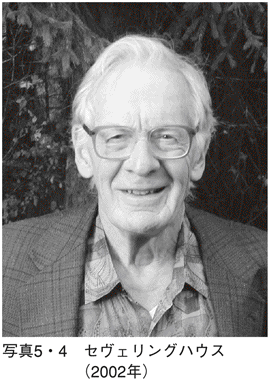
ワシントンＤＣでの世界麻酔学会のときに、ドクター・アオヤギの顔写真が大きいスクリーンに映し出され、この場ではじめてこのことを知って驚いた日本の医師たちもいた。発明後、すでに十数年が経過していた時期だったのだ。ドクター・アオヤギの名もアメリカから日本へ逆輸入されたわけで、やがて世界へと広がるのには時間がかからなかった。
さて、そのセヴェリングハウスだが、以前から血液中のガスに関する研究者として知られていた。すでに１９５０年代に、普段の手術中の体験から、人間の体は炭酸ガスに敏感であることを感じていた。というのは、血中の炭酸ガス分圧を意図的にコントロールすると、それに応じて心肺機能に変化の出ることがわかっていたからだ。
この事実から、血液中の炭酸ガスを感知するのは、延髄にある化学受容体であることを突き止めたのである。
ここからがセヴェリングハウスの人並みでない話になる。延髄にある炭酸ガス受容体と同じものを人工的に作りあげれば、炭酸ガスを測定できる装置が実現可能と考えたのだ。こうして作られたセンサーが炭酸ガス測定用センサーであり、彼の名を冠して「セヴェリングハウス電極」とよばれるようになった。
現象論がさきで原理があとになって判明することはよくある。人体機能の諸現象を見て、その原理に迫り、かつ模倣するというのも興味深い話ではある。その実例の一つが、セヴェリングハウス電極というユニークな発明につながったというわけだ。
血液中の炭酸ガスを測る
セヴェリングハウス電極は、人体の化学受容体を模したpHガラス電極で炭酸ガスを検知するような構造になっている。この電極部分に炭酸ガスが到達すると、基準電極としてのAg/AgCl電極との間に電圧が発生する。この電圧を測定することによって、炭酸ガス分圧が算出されるというしくみだ。
この電極は胸部などの皮膚のうえに貼り付けて使えるようになっている。ただ貼り付けるだけでは測れないので、ちょっとした工夫がしてある。炭酸ガスを測りたい箇所の皮膚表面を42℃程度に暖める。この温度は熱めの温泉に入る程度だが、半日程度で電極を貼り替える必要がある。なぜならば、長時間センサーを貼りっぱなしにしておけば、やけどの心配が出てくるからだ。
まずは、なぜ暖める必要があるかについての理由を記しておく。専門的には「動脈化」ということばを使っているが、文字どおり血液を動脈と同じ状態にする。ふつう、皮膚のすぐ下は静脈の毛細管が張りめぐらされている。それを強制的に暖めれば血行がよくなり、動脈血に近い状況を生み出せる。実際に測りたいのは、体表から遠い動脈血の中に含まれている炭酸ガスの割合なので、「動脈化」することにより皮膚直下で測ってもその目的に近づけると考えたわけだ。
図５・５は、セヴェリングハウス電極を皮膚に装着して炭酸ガスを測る状況が示してある。加熱されて動脈に近い状況になった毛細管からは、ごく微量の酸素や炭酸ガスが皮膚を通って電極表面まで出てくる。ここで測定電極のpH電極に達すると、基準電極のAg/AgCl電極との間に電圧が発生するわけだ。この電圧は、血液中の炭酸ガス分圧の対数に比例することがわかっているので、この電圧を測定すれば動脈血の炭酸ガス分圧が計算できる。
こういう理論は口では簡単に説明できるが、実際に装置として実用化するにはそれ相応の努力を要する。なにしろ、皮膚から出てくる酸素や炭酸ガスの量など推して知るべしであり、極微の世界を垣間見るようだ。というより、アイデアを生んだセヴェリングハウスはもとより、そんなことが可能だと信じ、長期間にわたり研究・開発を続けてきたエンジニアたちに対し、頭の下がる思いがする。
製品として臨床の場で利用できるようになったのは１９８０年代の前半からで、パルスオキシメータと同世代の機器といえる。
ただし、パルスオキシメータが今日の医療機器の星ともいうべき存在に成長したのに対し、経皮血中ガスモニタのほうはまだ日陰のような存在だ。それでもごく最近、耳たぶに付けるセンサーが知られはじめ、注目を集め出している。
このラジオメーター社製の小型センサー（写真５・６）には、セヴェリングハウス電極とともにパルスオキシメータ用のセンサーも組み込まれている。これにより、血液中の炭酸ガス分圧と酸素飽和度が同時に測定できるようになった。
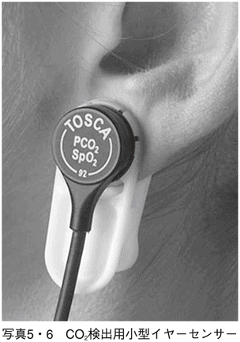
血中酸素だけでなく炭酸ガスについてもくわしい情報が長時間にわたりモニタできるようになった意義は大きい。炭酸ガスの状況が明らかになれば、実際に「体内の組織で酸素を消費した燃えカス」の存在が確かめられるからだ。
ＳＡＳスクリーニング装置
ディケンズは見抜いていた
イギリスの有名な作家ディケンズの小説の中に興味深い記述がある。１８３７年に発表された作品『ピクウイック・クラブ』は、５人の登場人物によるユーモアあふれる旅物語だ。その一人に「ジョー」という太った中年男性がいる。
この「酒好きで太っちょのジョー」は、昼間でも居眠りしがちなオジサンとして扱われている。現在、わが国でも注目され出した「睡眠時無呼吸症候群」の患者が呈する症状そのものなのだ。ということは、この小説が書かれた19世紀の前半という時代に、ディケンズはこういった太めの中年男性に多く見られる傾眠兆候に気づいていたわけで、その観察眼の鋭さが注目に値する。
現代の日本においても、電車を運転中の運転手が居眠りする事件があってから急速に注目されるようになり、ＳＡＳ（sleep apnea syndrome）という用語も知られるようになった。
肥満の人は体の外側にだけでなく、気道などは内側へも出っ張って狭くなるという。一見ウソのようだが、まじめな話だ。気道が狭くなると、空気の通り道が狭められるので、呼吸の音が大きくなる。そのうえ、眠ると舌や気道の近くの筋肉がゆるんで、気道をふさぐようになる。これがイビキの原因だ。
思い当たる方も多いと思うが、深酒をするとこれらの筋肉群はますますたるみ、気道が余計に圧迫されてイビキが大きくなる。それが不眠の原因につながるというわけだ。現代医学ではこうした原因追求の末、適切な診断・処置が施されるが、ディケンズは自分の目での観察だけで、すでにこの疾病のことを見抜いていたのである。
「睡眠時無呼吸症候群」とは
人間生活にとって、昼間の活動だけでなく休眠期としての睡眠の量や質も重要であることはいうまでもない。というより、よりよい眠りこそ活動の原動力といってもいいくらいだ。そのことを考えてみることがその人の活動効率をチェックする重要なファクタともなりうる。
前例の「電車運転中の居眠り」という一つの事件がきっかけになって、「そんな病気があるのか」と改めてその存在自体が認識されるようになった。決して現代人特有の病気というわけではないのだが、このところ「睡眠時無呼吸症候群」がやたらと世間の話題となっている。その名の示すとおり、睡眠中に呼吸停止がたびたび起こる症状をみせ、睡眠の質が悪くなるだけでなく、堂々たる「病気」として扱われるようになっている。
定説になっているのが、イビキと呼吸停止の関係だ。とくに体調が不調であったり、あるいは疲れた後に深酒などをして大きなイビキをかくと、その後、数十秒間呼吸が止まることがある。温泉などにいって、同宿者のどうにも我慢できない大イビキに困っていると、急に息を止めて静かになる、こんな経験をお持ちの方もあるだろう。じつは、この無呼吸の時間と回数が問題なのである。
実際には、ＳＡＳは次のように定義されている。「一晩７時間の睡眠中に10秒以上の呼吸停止が30回以上あること、あるいは１時間あたり５回以上見られること」となっている。連続して呼吸停止があると大変なのだ。
一般的には太り気味の男性の中でも、40～60歳くらいの年齢の人に多いとされ、とくに首が太くて短いタイプは要注意だそうだ。しかも、飲酒したときだけイビキが気になる程度ならまだましで、ベッドパートナーからクレームがつくような雑音発生源になると、バカにできない問題となる。イビキの程度がひどくなってゆくとＳＡＳに直結することになり、ほうっておけない事態を引き起こすのだ。
どうしたらＳＡＳが診断できるか
さて、ＳＡＳの診断はどうおこなわれているのだろう。当人は、大イビキをかいて、「われ関せず」を決め込んでいる状況なので、自覚症状を求められても回答のしようがない。一般的には睡眠中の話なので、第三者の診断が必要だ。ただし、自分のイビキの音で飛び起きるという人もいるので、その事実を事後自覚することもある。
呼吸をしているかどうかは、端にいる人が見れば、胸の動きで察知できる。しかし、これを自動的に診断する方法は、意外に難しい。現在では、鼻や胸につけたセンサーなどでキャッチする方法がとられている。
サーミスターを使った呼吸の測定は、鼻につける小型のクリップタイプのものによっておこなわれる。呼気と吸気では温度差があるため、サーミスターの温度特性を利用することによって呼吸波形が検出できる。
やや難題なのは、いくら小型であろうとも装着される被験者にとってはわずらわしさがある。睡眠をチェックするためのセンサーが睡眠を妨げてしまっては測定の意味がない。
一方、胸部バンドにストレンゲージなどを埋め込んで呼吸測定をおこなう方法もある。呼吸によって胸に巻かれたバンドが伸び縮みすると、ストレンゲージの電気抵抗に変化が生ずることを利用している。こちらも被験者にとって胸が締めつけられる違和感があることは否定できない。
そこでさらに進んで、眠りの深さを推定する方法も考えられてきている。最近、病院で導入している「終夜睡眠ポリグラフ」という装置による検査方法だ。ポリソムノグラフィー（略称はＰＳＧ）ともよばれ、ＳＡＳの診断がより確実になったのである。わかりやすくいうと、被験者の眠りの深さを終夜にわたってモニタするもので、それには多種類の情報を解析して割り出す方法がとられている。その中には、あとで記述する患者の「脳波」やパルスオキシメータからの情報など、必要とされるものが多項目にわたって検査される。もちろん、胸の動き、体位、呼吸音などもチェックされる項目となる。
注目に値するものとして、眼球の動きに応じて変動する電位として知られる「眼球電位図（ＥＯＧ）」というのもある。目の両側に電極を装着し、この電位変化を測定すれば、目を閉じた状態でも、まぶたの下の眼球の動きがとらえられる。睡眠時によく知られる現象としてＲＥМ（Rapid Eye Movement、急速眼球運動）というのがある。この現象をとらえるのには、ＥＯＧは最適なので、脳波だけでは分析不能な情報でもその提供が可能となる。
ポリソムノグラフィーは、このような情報を解析して眠りの深さを４段階に類別して表示する。ここでいう「眠りの深さ」というのもなかなかわかりにくい。眠っている本人が自覚しているわけではないので、右記のような多くの情報を解析して推定している。
確かに、「昨夜はよく眠れた」というような感覚は、翌朝になって感じることができる。だが、何をもって「よく眠れた」というのだろう。たとえば、途中でまったく覚醒せず夢も見なかった場合などには、「良質の睡眠」を自覚できる。
これに対して、「昨夜は一睡もできなかった」という経験をすることもある。こちらは、自分自身で覚醒しているという確証があるので、「よく眠れた」という場合より確かかもしれない。本人の自覚症状では判定不能の睡眠を、客観的にモニタすることができるのがポリソムノグラフィーだ。ただし、眠りそのものを妨げることなく測定する本格的な方法論は、まだ発展途上というしかない。
脳波計・脳波モニタ
脳の活性度を示す証
人体から発せられる電気や磁気は、心臓からだけ出ているわけではない。心電図が人体からの電気現象の最初の発見につながったのは、それ相応の信号がキャッチできるからである。その後、１９２４年にドイツの精神科医ベルガーが脳からも電気が出ていることをつきとめ、脳波（ＥＥＧ）あるいは脳電図とよんだ。
だが、当初このことに賛同する人はいなかったという。なぜなら、脳から出ている電圧は心電図の10分の１程度、つまり最大でも１００マイクロボルト程度しかない。こんな消え入りそうな微弱な電圧に過ぎないのに、なぜ脳と関係すると言い切れるのか。電極のリード線が動くことにより、あるいはまた部屋の電源ラインなどの外部環境から入り込むノイズだけでも10～20ミリボルトもあり、これらのほうがはるかに大きい。だから、電極から検出される電圧が「脳から出ている」という根拠をどうやって証明するかが大きな壁だった。
そこでベルガーは考えた。脳からの電圧だとすれば目を閉じたときと開いたときに、異なった形となるはずだ。あるいは、覚醒時と睡眠時にも別の波形になるに違いない。これこそがベルガーの着想であり、それが脳に起因する電気現象であることの証明の決め手となった。
脳波を分析すると、心の動きが表現されていることがわかってきた。とくに、 心の緊張・怒り・不快のケース、
心の緊張・怒り・不快のケース、 心の安らぎ・喜び・快感のケースで大きなちがいが出ることも解明された。
心の安らぎ・喜び・快感のケースで大きなちがいが出ることも解明された。
のケースでは、波の数が多い、いいかえると周波数が高い波形が出る。周波数は13～26ヘルツ程度が観測され、この波はベータ波ともよばれている。一方、のケースでは、波の数が少ない、いいかえると周波数が低い波形が見られる。周波数になおすと８～12ヘルツ程度で、この波はアルファ波ともよばれている。
はじめてを発見したのもベルガー本人であり、それゆえにアルファ波のゆっくりしたリズムを「ベルガーリズム」とよぶ。この名称を与えたのがイギリス人のエイドリアンだ。
ベルガーの脳波発見という功績を讃えるために、彼の名を冠したのである。それは、脳波という新しい知見に対する賞賛への代名詞ともなった。
ベルガーリズムがゆっくりとした波形であるという事実は、脳の活動そのものの反映であろう。「神経がピリピリ」というように、イライラしていれば、当然神経系が過敏になっていることに通じる。
ここまで書いたところで、ふと感じることがある。人間の根本的、原始的な感覚のことだ。
生命の誕生以来、人間の感覚は非常に複雑に進化してきた。喜びだけでも、楽しさ、うれしさ、感激、好き、美味しい、心地よいと、あげればきりがない。逆に、怒りだって多種多様で、苦しみ、不快、嫌い、まずい、などである。しかしながら、もし脳波から推測するならば、最初の人間、あるいはもっと原始的な生命体が最初の感覚として持ち合わせていたのも、大きく二つに分けられたのではないのか。それは、アルファ波に代表される「仲間意識」つまり、安らぎや快感であり、もう一つが「敵対意識」つまり、緊張や不快であったろう、ということだ。
一般にいわれているとおり、原始生命体は、海に生まれただろうと推測されている。その裏づけとなる証拠も十分である。とすると、原始的な生命体内に生まれた感情や感覚があったとすれば、それらは「敵」か「味方」を判別する感覚ではなかったのか。
これらこそがアルファ波に代表される「安らぎ」と、ベータ波に代表される「緊張」である。脳波の解析結果が示すのは、人間の根元的な感覚表現といっていい。
麻酔の深さがわかる
最近になって、手術中の麻酔のかかり具合、すなわち麻酔深度が脳波から測定できるモニタも出てきた。すでに、眠りの深さについても、脳波から推測されていることは触れた。
なぜそんなことが可能なのだろう。じつは、睡眠中の脳波を測定すると、覚醒中の波の周波数に比較して、それよりさらに低いθ（シータ）波というのが出ることがわかっている。目覚めているときの波の種類はα波やβ波だが、シータ波はさらにそれより下の周波数で、４～７ヘルツ程度の波だ。脳神経の活動がより緩やかになっている証である。
そこで麻酔の話に移ろう。じつは、シータ波よりさらに周波数の低い波も確認されている。手術の際、全身麻酔をかけたときにあらわれるもので、周波数は３ヘルツ以下となる。この波はδ（デルタ）波ともよばれる。逆にいえば、このδ波が観察できれば、麻酔がかかった状態であると確認できるわけだ。
睡眠中のシータ波よりさらに低いという意味は、全身麻酔という手法が人間の脳の活動をより不活発になるように押さえ込んでいる、と考えることができる。
写真６・１（上）（下）は、脳波を使って麻酔の深度を測定するアメリカ・アスペクト社製（輸入元・日本光電工業株式会社）の麻酔深度モニタＢＩＳ‐ＸＰである。これまで、麻酔のかかり具合を客観的にモニタする手段は、手さぐりの状態が続いていた。「○○さん、わかりますか」と問いかける。体をトントンとたたいてみて、反応を見る、というじつにプリミティブなチェック方法でしかない。だが、脳波を利用する方法は、ここにきてわが国でも麻酔モニタの標準手段として定着しつつある。「麻酔の深さ」は、睡眠の深さとともに客観的に知るのは難しいことはわかっている。しかしながら、こうした手段は少なくとも最低限の科学的に根拠のあるデータを提供できるわけで、その利用価値は大きい。
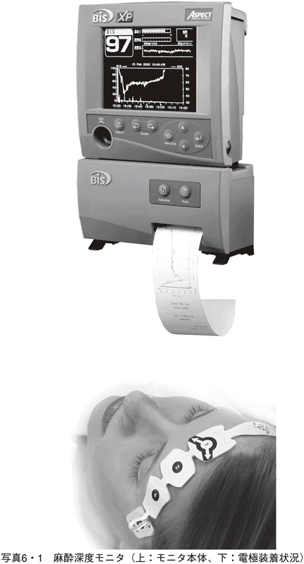
表６・２は、脳神経活動の状況とそれに伴って出現する脳波についてまとめたものである。上から順に、脳の活動が活発になり、それにしたがって出現する脳波に変化があらわれる。周波数が高くなるのは、脳の活動がより活発化することに起因するのだろう。周波数別にはっきりと分類されるが、ただ大分類されているだけで、細かい心の動きまでは表現されない。そのうえ、普通はこれらがミックスされて出てくるわけで、きちっと区別されて出てくるわけではない。この表は、そう思いつつ作ったものだ。
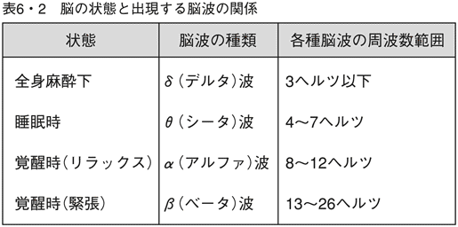
病気診断への寄与となるか
これまでの脳波の役割は、主として病気診断を目的として使われてきた。つまり、異常脳波の出現をチェックして、病気の原因を察することだ。
たとえば、「てんかん」という脳の病気がある。このケースでは、てんかん特有の脳波パターンが記録上から読みとれる。その特有のパターンとは、鋭いスパイク状の波が見られることだ。とくに、焦点性てんかんとよばれるものは、異常部分が偏在しているとされる。そのため、この異常部分で脳活動がコントロールできない状況になっていると考えられる。脳波にこうした異常パターンが認められれば、てんかんの診断に役立つ。
よく利用されるのは、交通事故などの際の脳神経機能の異常チェックだ。とくに、頭部外傷のケースでは、異常脳波の出現の有無を見て、後遺症を含めた診断に利用できる。また、認知症の場合には、頭全体からのアルファ波の出現によって診断している。
また、注目すべき用途として脳死の判定がある。臓器移植に関わる重点課題の一つで、脳死とは何かというところまで深い議論がある。この問題解決の解答として利用されるのがやはり脳波だ。
通常は、３マイクロボルト以下を「平たん脳電図」あるいは「平たん脳波」と定義している。この数値が脳機能喪失という診断を下す限界値として使われている。心臓や肺にも増して、究極のバイタルサインとでもいえばよいかもしれない。
脳磁計
脳波に対する脳磁図
心電図と心磁図の関係と同じように、脳波に対する脳磁図（МＥＧ）も計測できる。この磁界も脳波の起因となる生体細胞の興奮がおおもとになっている。その伝達にかかわるのが電解質の流れであり、それが起因となって磁界が生じる。いうなれば、おおもとはすべて生体細胞の活動なので、脳も心臓とまったく同様で、脳波という電気現象とともに脳磁図という磁気現象が観測できるのである。
もちろん、根本的には生体細胞の一つひとつまでさかのぼれるわけだが、実際に外部から測定しているのは、これらの活動の総和を概観している。これらの測定された総合結果をもとに、脳の活動を推定しようという試みだ。
ただし、脳磁図の大きさたるや心磁図よりもさらに小さい。心磁図測定の大きさを地磁気に比較してその１００万分の１と説明したが、脳磁図はさらにその10分の１から１０００分の１でしかない。まさに桁違いの超微弱信号なのだ。
心磁図でさえ、ごく微弱な情報なのに、さらにそれ以下のミクロの世界をのぞくような話になる。それまでして測定してみる必要はあるのか、というような疑問が聞こえてきそうだ。だが、そうした極微の世界であっても、いろいろなことを教えてくれることがわかってきた。
まず、なぜ脳波だけでは不十分なのかということを考えてみよう。
脳波の測定の際には、少なくとも電極を装着することが必要だ。これに対して、脳磁図の一番のメリットは、人体すなわち頭部に非接触で測定できることだ。つまり、ＳＱＵＩＤ（第３章参照）を使えば、センサー部を人体に近づける必要はあっても、直接の接触は不要なのである。
こういうことは、人体計測術全般についても非常に重要なことなのだ。電極を装着するだけで、人間は不快になるし、そのうえ接触がうまくいかなければノイズの原因にもなる。非接触による計測という意義は、極めて大きい。
そのうえで、脳磁図の計測の意義をみてみよう。最大の特徴とされるのが、脳を三次元的に観察できることだ。つまり、空間として、どの部位でどういう活動をしているのかがわかるのである。しかも、頭蓋骨に影響されずに内部の状況がわかるのだ。
もう一度、てんかんの病例にもどってみよう。脳磁図によれば焦点性のてんかんでは、場所を特定することが可能となる。したがって、多チャンネルの脳磁図から、てんかんの焦点、すなわち出発点が検知でき、どこで異常が発生して、どう推移するかがわかるようになる。つまり、脳波だけでは難しい診断に対しても有用な解答を用意できるケースが出てくる。
多チャンネルＳＱＵＩＤの威力
最近のＳＱＵＩＤを応用した脳磁図測定装置は、２００チャンネル以上を同時に計測できるものが登場し、この分野の計測機能は大幅に向上している。というより、最先端の技術であるといっても過言ではない。
いろいろな脳疾患に対する応用はいうまでもないことなのだが、それ以上に注目されているのは、脳がどういうしくみで活動しているのかという研究だ。
たとえば、人間の視覚、聴覚といった感覚をどこで受け止め、脳内でどういう活動がくり広げられているのかという追求である。それ以上に、人間の脳内では言語を操ったり、人の顔を覚えたりする機能も具備している。こうした、高次の脳機能を解明できるのではないか、という期待がある。
視覚といっても、単純なものばかりでない。色の区別、明るさの区別、文字や絵を判読することなど、あげればきりがない。こうした視覚を脳のどこかで感知し、その結果を記憶したり、手や足に情報を伝えて行動させることまでおこなってしまう。こうした活動は、脳波のような情報からは得られない。しかし、２００チャンネルの情報を同時に計測できるＳＱＵＩＤなら、このような情報まで非接触で取り出せる可能性がある。
脳波では、脳の四つの状態を表現するに留まっている。しかし、脳磁図ならばもう少し細かな分析ができそうだ。一人の人間が考えていることは、客観的にはわからない。しかし、脳磁図の分析研究は、そんな夢のようなことの実現に、一歩近づいているという実感さえ抱かせる。
痛み測定装置
「他人の痛み」がわかるか
他人の考えや痛みなどわかるはずがない、とふつうは思われている。たしかに、いくら科学技術が発展しようと、そう簡単な課題ではない。
１９９０年代の後半、「痛み」の国際基準が決まったというジョークがネットで飛び交ったことがある。単位はhanage（ハナゲ）で、なんと「一本の鼻毛を抜くときの痛さ」が基準になっているという説が、まことしやかに流布した。日本語で単位を決めるというからには、日本人の誰かがこの物語の作者に違いない。そんなバカな、と一笑に付されそうだが、現代版ウィキペディアにも「痛みの基準はハナゲ」という項目での〝怪説〟さえある。
痛みに男女差があるのかないのかさえもわからないが、出産の痛みが男にわかるはずがないといって女の強さが強調される場面もある。鼻毛が出たのは、鼻の粘膜には男女差が存在しないことがその根拠になったという話だ。
もちろん、最先端の技術を駆使しても他人の痛みを標準化した数値であらわすことなど、そう単純な課題ではない。それゆえに、「スゲー、イテー」とか「ハチに刺されたくらい」「痛くも痒くもない」とかの主観的表現にならざるをえない。
とはいえ、医療の世界では、なんとか痛みの程度を測定したいという要望もある。
その要求に応えるように、２００７年の春に登場したのはニプロ社が開発した「知覚・痛覚定量分析装置（Pain Vision）」という装置だ（写真６・３）。この装置は、患者の腕に電極を取り付けて電気刺激を加えることによって痛覚との比較をすることが基本になっており、次の三つの計測過程から成立している。
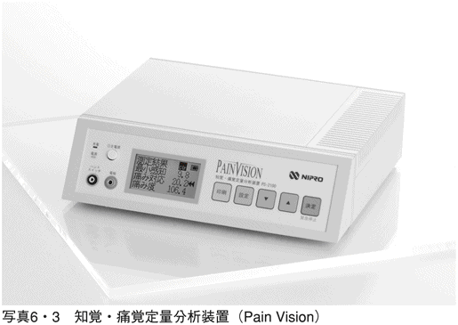
測定者に微少な電気刺激を与え、感知できる最低電流（電流知覚閾値）を測定する......最小の痛み（痛みを感じ始める数値）の決定。
「現在の痛み」と同等になるまで、電気刺激となる電流を大きくしてゆく（痛み対応電流値）......痛みを電流値に置き換える。
 その両方の値から、「痛みの程度」を計算して数値化する。
その両方の値から、「痛みの程度」を計算して数値化する。
図６・４に、この方式で測定する際の様子を示す。仮に「痛み度」という指数を設定し、数式としては、次のように表現される。
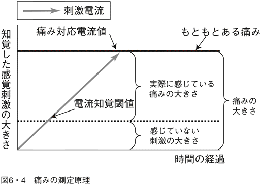
痛み度＝100×（痛み対応電流値マイナス電流知覚閾値）電流知覚閾値
ニプロ社では数値化という第一目標は達成したが、まだ正式に決まっていない単位名を募集中だという。冗談抜きに、hanageにかわる新しいアイデアがあれば採用されるかもしれない。
本来、人間の痛みの感知は、より痛いところを「痛い」と感じる特質をもっているため、どちらをより痛いと感じるかというチェックにより、痛みが客観化されるのだ。難点は一つの痛みの測定にもう一つの痛みを加えるため、患者側には二重の痛みを与えることだ。
しかし、これまでは何の客観性もなかった痛みが数値化されるようになった意義は大きい。医療の現場では、「痛みの程度」がわかることで、診断や治療の方針が具現化できる目安となりうる。
体温計・体温モニタ
日本記録が出た夏
２００７年８月16日、74年ぶりに日本における最高気温の記録が更新された。埼玉県の熊谷市と岐阜県の多治見市で40・９度という前代未聞の温度が体験されたのだ。気象庁は、この年から最高気温が35度以上になった日を「猛暑日」と定義づけていた。ところが、40度も越えたとなればこのよび方では不十分になってしまったわけだ。では、「炎暑日」か「酷暑日」とでもよべばいいのか。
人間の体温が36～37度程度にコントロールされていることを考えると、それより４～５度も高いわけで、ただ静かにしているだけで汗が噴き出してくる。
本来、人間の体温は気温よりは高い状態が普通だ。つまり、熱的に人体を眺めれば、通常は発熱体もしくはヒーターに似て、体内では常に熱が発せられている。体内に取り込んだ食物が熱エネルギーに変換されることによる。
ところが、外気温が40度以上にもなれば、体内での温度コントロールはどうなるのだろう。ヒーターをクーラーに切り替えられる能力が備わっているのかどうか。現代のすぐれたエアコンのごとく、素早く切り替えられるとはとうてい考えられない。
実際、このコントロールができなければ熱中症となり、手当が遅れれば死に至る。連日、多くの患者が発生し、また死者の数も無視できないほどの状況を招いた。これは人間だけの問題ではなさそうだ。とくに暑さに弱い動物には、まともに被害が及ぶことになる。千葉の動物園に飼育されていたレッサーパンダが熱中症で死亡した、という新聞記事もあった。極端に高温・多湿などの状況になれば、適応能力の限界を超えてしまうのだ。
人間も冬眠できる？
もう一例、今度は逆に環境温度が低い状況下で起きたトピックスを示そう。
２００６年の初冬、新聞紙上では「本当に冬眠？」というタイトルで、20日以上を意識不明のまま山中で過ごして生還した人の事例が紹介された。幸いにも瀕死の状態で発見されたあと、病院に運ばれたときのデータがこれまでに類例のないものだった。
その記事によれば、病院搬送時の体温が22度程度。心拍数も呼吸数もきわめて少なく、これまでの常識からすればはるかに限界値を超える数値だった。
脈拍も呼吸も極度に省エネ化したようなこれらのデータすべてが、健常人のそれに比較して、最小限の生命を維持するものだったと推定されている。いちばん興味を引いたのは、低体温症でも35度程度が普通なのに、20度に近い値で生きていたことへの稀有な事例で、まるでフィクションのようだ。
シマリスなどの冬眠可能な小型動物は、気温の低下とともに体温を極端に下げ、５～６度という超低体温にして代謝機能も最小限にまで低下させる。それゆえに変温動物とのよび方もある。このとき、循環、呼吸をはじめ脳活動などほとんどが休止状態となる。これが「冬眠」の実情であり、恒温動物の人間ではあり得ない特質とされている。
クマなどのケースではやや様子が違う。一般的な変温動物では極度に体温を下げて過ごすが、クマは冬眠中でも体温が２～３度下がるだけで、完全な冬眠とは異なる。実際、外部から音などの刺激が加わると自分で目を覚ますことも可能だとされる。
このクマの冬眠もどきに比してみても、先の人間の生還例は突然変異的な事例かもしれない。ただ、一つだけ「時間経過」の要素を考えておく必要がありそうだ。ふつうの低体温症にしても、経時的にみれば急変に違いなく、生体の対応が間に合わないのではなかろうか。この生還例では、20日以上にもわたって少しずつ体温が下がり、そういう緩やかな下降に対してなら生体の対応力が出てくる、と考えられないだろうか。
温度から見た人体
ところで、人間や他の多くの動物の体温が37度程度に保たれているのはどうしてなのか。断定的な解答は不可能だとしても、いくつかの要因を考えてみるのは、頭の体操としても楽しいのではないだろうか。
はじめての生物が太古の海で生まれ、水中での生活は長期間におよんだ。水の温度は比較的安定しているので、水中生物の対温度特性は、そう厳格でなくともよかったはずだ。やがて、陸にはい上がり水陸両方の生活がはじまる。陸に上がれば、直射日光を浴びることもあり、体温は急上昇する。このとき、両生類ならば海に逃げ帰ればことが済む。
時が移り、陸上に住む時間が長くなる。そして、人間が生まれた頃には、完全な陸上生活に慣れ親しんでいたはずだ。とすれば、このときには自分の体内で温度を調節するメカニズムを確立していたに違いない。
人体は機械ではないので直接的な比較は無理だが、体温をコントロールする有力なメカニズムの一つは、「水を循環させる」ことだろう。それがとりもなおさず血液の循環に他ならない。
そう考える一つの根拠は、血液の成分は海水の成分にかなりよく似ている、ということにある。人間をはじめ多くの動物たちが、その進化の過程で海水を自分の体内に取り込む工夫をしてきた、と考えればよい。それは、自分の体温コントロールのためにである。
しかも、寒暖の上下に合わせ、どれくらいの温度に保てば適応しやすいかを模索し続けて来ただろう。その結果、地球環境との共存には、37度の「現在値」がセットポイントとして最も効率的であることを見い出した、というわけだ。
数十億年の歴史を一瞬にして短縮したような話だが、自分の体をつらつらと概観しての感想である。
ガリレオの温度計からはじまった
私なりの勝手な仮説を提示した。これを検証するには、壮大な研究目標を立てなくてはならない。とはいえ、その過程は一歩一歩進めることしか方法がない。そのとっかかりとなったできごとから振り返ることにしよう。
まずは、温度計測の古い話で登場するのが意外にもイタリアの物理学者ガリレオ・ガリレイだ。地動説や木星の衛星発見などという話のほうがガリレオにはふさわしいので、ここになぜガリレオが出てくるのか、といぶかしがる読者もおられるだろう。
確かにガリレオは天文学者としての功績が大きく、医学への貢献などあったのか、と考えられても不思議ではない。ところが、これらの陰に隠れてあまり知られてない実績として、16世紀末の温度計の発明がある。温度が上昇すれば空気が膨張するという事実はギリシャ時代から知られていたようだが、ガリレオの温度計はその現象をそのまま利用したものだった。
16世紀まで、人びとは「暑い」「寒い」という感覚に、「すごく」とか「ちょっぴり」とかを付加するくらいが精一杯だったに違いない。温度計の発明は、はじめて温度という概念の存在とともに、それが一つの物理量に置き換えられることを教えたのだ。
ガリレオが所属していたのは、血液の流れに関する学説で話題をまいたガレノスやハーヴィーなどかずかずの有名人を輩出したパドヴァ大学である。その大学の教授で、ガリレオの同僚にサントリオ・サントリオという姓名が同一の人物がいた（写真７・１）。サントリオは医学研究者として知られているが、とりわけ、彼の発明品の一つの逸品が体温計である。
この体温計の基本原理は完全にガリレオの温度計に依存しているものだったが、勝手な目盛りをつけた単純なものだった。サントリオは、口の中に入れられる小さいガラス玉にチューブをつけて、その先を水の中に沈められるようにした。口腔内の温度でガラス玉内の空気が膨張するとチューブ内の水位が変化する。計測器と呼ぶにはもったいない程度のものでしかなく、「体温表現器」といったほうが適切だろう。
サントリオはガリレオの褌で相撲をとったことになるのだが、これは、生体の情報を測定した世界初の実験であった。
なぜ体温が大切なのか
ところで、「冷たくなる」が死の代弁であるように、体温が保たれていることが、生きている証の一つである。一番身近なバイタルサインともいえる。そんな概念もない古い時代から、人間は体温を一つのたよりとして生死の判定をし続けていた。とすれば、古代人も体温への関心は人一倍大きかったと想像できる。
温度コントロールの考え方からすれば、人体は一つの発熱体と見なせることを示した。事実、一つのヒーターとして換算すれば、大人一人の発熱量は約60ワット程度とされる。地球の平均気温は20度前後と思われるので平均体温を37度に保つために、たゆみなく発熱している。この発熱は外気温などの環境に合わせて巧妙にコントロールされているので、人体の諸活動を探るための基礎データとして体温を測ることが有意義だ、と納得できる。
17世紀のサントリオの傑作は、一部の人びとの体温への興味をさらに増加させたであろう。だが、実用面からすれば、体温計が一般人に常用されるようになるには、さらに長い時間を要した。
はじめて実用になる体温計を作ったのがファーレンハイトである。彼の名の中国語訳をもとに日本でも「華氏」として知られ、温度計の単位として今でも使われることがある。現代でこそ、一部の国を除けば華氏は一般的でなくなったが、温度を「程度」から「数値」にしたことの意義は大きい。
しかしながら、現代人の常識からはほど遠い事実にすぎなかったことを知っておく必要がある。というのは、この時代になっても、体温が病気の診断に使えることがわかっていなかったのだ。だから、体温計とは、ただ単に体の温度が測れる器具でしかなかった。ただ単にハードが存在しても、使い方のソフトが不在ではまったく意味がない。
実際のところ、実用的な寸法の水銀体温計が出現したのは、19世紀後半になってからである。この頃から、ようやく人間の体温についての研究が進んできた。
「異常な発熱」と病気との関係をはじめて示したのはドイツ人医師ウンデリッヒで、１８６７年に『病気と体温の関係』という本による。「有熱（熱が出ること）」が病気と関係することに気づいたのは、19世紀末になってようやく、というのが実情だ。それだけでなく、体温が人体の生理情報を的確に示すという事実も明らかになってきた。その根底には、人間が恒温動物である、という前提があることはいうまでもない。恒温動物とて体温がまったく不変というわけではないが、夏とか冬とか外気温に関係なく、体温をほぼ一定レベルに保つ機能をもっているのは、考えてみると生体保護のための高度な手段だ。
この体温調節は間脳にある視床下部で営まれ、熱の産生と放散をコントロールしていることがわかってきた。寒いときには熱の産生が増え、血管を収縮させたり、ときには鳥肌を立てて熱放散を少なくするように働く。「身震い」という反射作用でさえ、熱を温存するための自衛手段の一つなのだ。逆に、暑くなれば、発汗作用により蒸発熱を利用して体温を下げるような機能もある。
さらに、万が一、細菌の体内侵入などで発熱物質が視床下部を刺激すれば、体温は上昇して発熱という状況をきたす。発熱を知れば体内に異常が起きていることがわかる、という理屈が成立する。
こうした事実が明らかになるにつれて、体温測定の意義が理解されるようになってきた。
体温計も進化している
ここで話をぐっと現在に近づけよう。今や、水銀体温計は20世紀に活躍した器具に成り下がり、病院でも家庭でもこれに代わって電子体温計が主流になっている。ところが、電子体温計になったからといって測定に時間がかかるという水銀体温計と同じ欠点を引きずったままで、測定にふつうは３分から５分くらいの時間を要する。
なぜということもないが、水銀体温計でも体温で水銀を暖める時間が必要だった。電子体温計になっても、この基本的な測定原理はほとんど変わっていない。ただ感熱部にサーミスターという温度によって電気抵抗が変化する素子を使っているので壊れにくくなっている。
そのうえ、予測式といって完全に同じ温度にする前に、最終温度を予測できるものも出てきたため、測定時間はかなり短くなった。
また、近頃は瞬時に測定可能な体温計が普及しはじめた。センサーのついている先端部分を、耳に１秒間当てて鼓膜の温度を測る方式だ。これまでの体温測定に比べれば、またたく間の測定といえるだろう。
この測温の方式は、従来のサーミスター式とはまったく別で、赤外線を使用している。センサーが鼓膜から放出する赤外線の量を感知し、温度センサーによって温度を測るしくみだ（図７・２）。
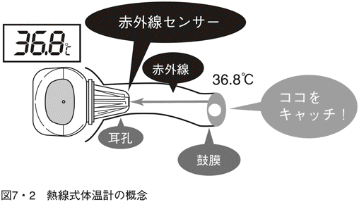
「絶対温度」は、絶対零度すなわちマイナス２７３度を基準値として温度を表現する。一般的には、ある物体が絶対温度Ｔ度をもっていると仮定すれば、その物体からは絶対温度Ｔに比例した赤外線が放射されている、という法則がある。
この法則を利用した測定法を用いており、鼓膜から放射される赤外線をセンサーで受光し、熱エネルギーに変換する。このときの温度を測定すれば鼓膜の温度がわかる、というわけだ。ただし、センサーの温度が測定前にどうだったかを確かめておく必要がある。そのために、もう一つ別の温度センサーが組み込まれている。この温度センサーと赤外線の出力を比較して鼓膜の温度が計測される。
鼓膜を使う理由は、体内の深部温に近い値が得られるという目的からだ。この方式も以前の体温測定方式に比べれば測定時間が極端に短い、という大きな特長がある。
鼓膜には直接接触しないので、これを傷つける心配がないし、痛くもかゆくもない。また、保温対策も不必要で、衣服をぬがせる必要もない。脇の下で測らなければならない煩わしさから解放されたのだ。写真７・３にこの方式による耳式体温計、オムロン ヘルスケア社製の「けんおんくんミミ」を示す。
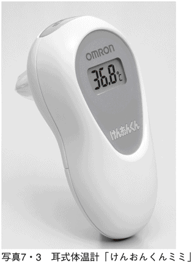
まだ旬の体温測定技術
体温測定の方法は、ここにきて斬新な方式が導入されるようになった。百円玉ほどの小型チップを貼り付けておくだけで、連続測定ができる。
写真７・４は、体表温度測定用の重さ約７グラムほどの小型チップである。このチップを体表の一点に貼り付けておくと、その場所の温度を長時間にわたって測定することができる。これまでの体温測定は、時間的にいうといわば「瞬時値」だったため、温度の変化を観察することができなかった。しかし、この小型チップを使えば、体表のあらゆる場所に装着でき、その部位の皮膚温の経時変化を追跡することができるようになる。このチップが小さいというメリットは新方式の体温計測という研究分野に寄与しつつある。
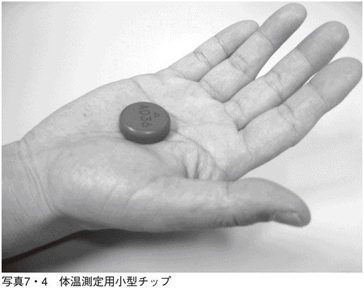
小型チップには、体表から発せられる温度を感知する微小センサー（サーミスター）が封入されている。微小サーミスターなるがゆえに、瞬時的に温度測定ができるという特長がある。しかも、１００分の１度というこれまでになかった高精度と、それに加えて連続測定を可能にした新技術が融合している。さらに、チップ内には数値データをメモリーする半導体素子も含まれているため、24時間、あるいは１週間といった長時間の体温データが保存される。このチップをはがして、記憶素子内のデータをパソコンに出力すれば、たとえば朝の８時15分には36・43度だったというような詳細なデータの読み取りができる。
現代社会にこれだけ出回っている体温計だけみていれば、誰だって体温測定技術というような基礎研究は完成されたもの、と考えてしまう。ところが、そういった早合点は、万人に共通する落とし穴で、事実、これまでは体温を連続的に測ることさえ実行されていなかったのだ。
ということは、こうした新しい考え方は、誰もが日常的に疑問をもつことからスタートする。というより、私たちの思考は、つねにセンシティブの状態にしておくべきなのだ。この日常を当たり前として受け入れていたら、新しいことは何も生まれない。
体の部位による体温差
この小型チップでの測定によれば、これまで未知だった体の左右での温度が微妙にちがうこともわかってきた。しかも、体温は体全体を見渡した場合にその分布がさまざまな様相を呈していることが知られている。さらには、体表温は外気温の影響をまともに受けて変動している。
こうした体温の左右差、上下差、表裏差などを詳細にモニタすることで、かなりいろいろな病気をチェックできそうだという結果も得られるようになっている。体温計が発明されて４００年もたつというのに、人体の体温生理学はまだまだ生まれたばかり、というのが実情だ。裏返せば、それを追究するための「理想的な体温計」がなかったといわれてもしかたがない。
要望をいえば、人体のあらゆる部位の温度をたちどころに、しかも正確にモニタできる装置があれば、ということになる。常時発熱体としての人体の発熱状態を、場所と時間の要素を入れて測定できる体温計がほしい。それが、発熱体を管理するための常套手段に思える。
筋電計など
〝動人〟のためのエネルギー源
人間の本質の表現法として、ホモサピエンス（考える人）、ホモルーデンス（遊ぶ人）、ホモファビリス（作る人）があり、さらにホモモーベンス（動く人）というのもある。ホモモーベンスは、人の根源的な性質をその行動に求める考え方だ。人間の動きこそ、人間の人間たる所以というわけである。「働くことが生き甲斐」という人もいるが、これなどは動くことや働くことに意義を見い出していて、アクティブであることは、すなわち健康というわけだ。
それには一理ある。対極をみれば確かに死者は動かないので、人の動きの質を分析して、「元気の度合い」が推定できるかもしれない。
人の行動や動きは、その人の考え方、感じ方によっても変化するとしても、「若さ」とか「運動能力」を客観的に測定できるようになれば、広義のバイタルサインの一つと考えられそうだ。
その人体の動きを司る主役は、集合体としての筋肉だ。それは大きく三つに分けられ、骨格筋、平滑筋、心筋である。骨格筋は、「横紋筋」をもった随意筋である。これは、読んで字のごとく人間の意志で動かすことのできる筋肉で、その逆が不随意筋という。
手や指の筋肉も自分の意のままに動くので随意筋に属するが、内臓などの筋肉は主として不随意筋で、自分で動かせるわけではない。
主としてと書いたのには意味がある。一番不思議に感ずるのは心臓の筋肉で、これが何と横紋筋だと聞けば驚く。横紋筋イコール随意筋という原則が崩れている。
勝手な憶測になるが、こういう事実を知らされると、もしかして太古の時代には、心臓は自分の意志で動かせた時代があったのではないだろうか。心臓を早く動かしたり、遅くしたり、そんなことができたのではないのか......。というのは、心筋だけが例外で、あとの横紋筋はすべて随意筋だから、という理屈から夢想してみたまでだ。
随意筋は、人間が自分の意志で収縮させられる筋肉だ。これは、脳からの合図が神経系をとおして筋肉に伝えて思いのままに収縮させることによる。筋肉が収縮するとき、電気が発生することも突き止められている。
ここでもまた断わっておかなければならない。筋肉が収縮するときに電気が発生するという言い方も、また逆なのだ。前述したように、電気によって筋肉が収縮するのである。例のカエルがそうであったように、外部から加わった電気で足が痙攣した。それと同じように、人間の脳から発せられた信号が神経系統を経由することにより、細胞が興奮してイオン電流が流れる。その結果として、筋肉が収縮するのだ。
この過程は、「フィラメント滑走説」という理論で説明した。脳から伝わった信号が骨格筋まで達すると、カルシウムイオンを発して筋繊維を活性化する。筋繊維の内部には細い筋原繊維（フィラメント）が走っており、これが横縞に見えることから横紋筋とよばれるようになった。筋原繊維は太目のミオシンと細目のアクチンからなり、活性化されるとアクチンとミオシンが互いに滑り込むように引き寄せられる理論を思い出してほしい。筋肉が収縮するのは、この「滑走」が起因しているというわけだ。
筋電図からわかること
筋肉が収縮するときに観測される電気現象が筋電図（ＥМＧ）である。心電図や脳波と比較すると、より高い周波数を含んでいることや、より大きな電圧が検出される。
随意筋のケースでは、筋肉に力を入れたときに電圧が発生する。天性を備えたデンキナマズと太刀打ちするには、天と地ほどの差が歴然だが、発電原理が同じであることは明白である。
しかしながら、いくら小さかろうが、筋電図は筋肉の収縮状況を正確に反映する。大きな電圧が出ていればそれだけ収縮の度合いが大きい、というわけだ。緊張度に応じて、活動している筋繊維の数が増えていることを示している。
筋電図の測定法は、二つに大別される。一つは、筋肉収縮のときに発生する電位をそのまま測定して記録する通常の筋電図がある。もう一つは、筋肉に電気刺激を加えた結果、筋肉が示す反応を計測するもので、誘発反応筋電図といわれる。
これらの筋電図記録を医療分野、スポーツ分野などで有効に利用することもできる。というのは、筋電図を計測することにより筋肉の緊張度を明瞭に知ることができるのだ。
一般には、筋電図の効用は神経系や筋肉系の異常を見つけ出すことにある。とくに、筋硬直症などの診断に有用だ。筋強直性ジストロフィーのケースでは、周波数も異常なものを含む。このときの筋活動電位を音に変換して聞くと、ジェット機が急降下して爆撃する音が聞こえるらしい。この異常音には、冗談に聞こえるかもしれないが医学的にも「急降下爆撃音」という名がついている。
蛇足ながら、一つだけつけ加えておきたいことがある。筋電図測定には一般と誘発の二つあると書いた。じつは、脳波の測定のときにも、誘発脳波という検査法がある。音や光で脳神経を刺激して、その反応を見る診断法だ。誘発筋電図の場合の刺激が電気そのものであるのに対し、誘発脳波のための刺激は、音声や光という異質の刺激を使う。
これらに対比して、心電図のケースはどうだろうと考えてみた。じつは、心電図の検査では「誘発心電図」という検査法はない。強いてあげるなら、「負荷心電図」という検査法がある。スポーツジムで見られるトレッドミルなどを使って心臓に「運動負荷」を加え、出現する心電図を診断する方法だ。
生体電気現象を代表する三つのパラメータについて、現状の検査法を整理してみたのが表８・１である。
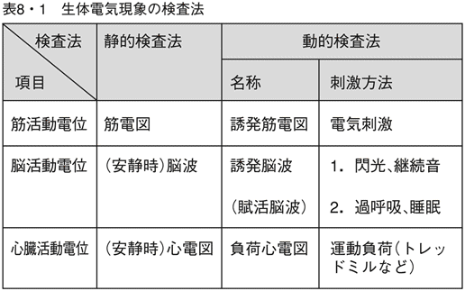
筋弛緩モニタという装置
筋電図計測などを利用して、全身麻酔のとき筋肉の緊張度を知れば、麻酔のかかり具合も推定できる。もしも筋緊張が続くようなことがあれば手術をすることができないので、手術を施す側にとって必要な情報となる。
全身麻酔の場合は、第一には疼痛除去が目的であるが、もう一つの目的は、筋肉を弛緩させて、手術を安全かつ容易におこなうことだ。患者自身は意識がないので、「リラックスしてください」というわけにはいかない。
そのために、利用されるのが筋肉に電気刺激を加えて誘発反応から緊張度を測定する方法だ。実際の手術現場で使用されている機器名は、筋弛緩モニタとよばれている。
電極をつける位置は末梢がよいとされ、ふつうは前腕内側（小指側）の尺骨神経上に装着する。
電気刺激方法としては、二つある。まずは、単一刺激法というものだが、ごく短時間のパルス、たとえば１ミリ秒程度で30～50ミリアンペア程度の電流を10秒に１度くらいのペースで加える。
もう一つは、４つペアになった電気刺激によるもので４連続刺激法という。２ヘルツ、つまり０・５秒間隔で発せられるパルスを４回連続で加え、最初の刺激に対する反応と４番目の刺激に対する反応を測定する。この反応の比率を求めて、筋弛緩の度合いが推定できる。
筋電図を観察して、筋肉が緊張しているかどうかを見極めているのだ。とくに手術中の患者では、筋肉の緊張が手術の妨げになるので、もし緊張が見つかったら、筋弛緩剤などを使う手段が選ばれる。このモニタを使えば、麻酔中での無意識下においてでも、その薬剤の効き具合もテストできる。
原理を逆用して治療器に
筋肉から発生する電気の原理を逆用すると、どういうことになるのか。第５章で、人体の機能を模して作り上げた炭酸ガスの測定装置例を示した。ここでは、筋電図の原理を治療器に仕立て上げた実例を説明しよう。
じつは、これを巧みに利用しているのが低周波治療器とよばれるものだ。「肩こり、筋肉痛に効きます」というキャッチコピーを聞いたことがあるだろう。
写真８・２は、この原理をまともに応用した製品例、オムロン ヘルスケア社のエレパルスを示す。その原理とは、筋肉に電気刺激を加えて、筋肉の伸び縮みをくり返すよう促す。もともと電気で動いている筋肉なので、外から加える電気刺激にも反応するのだ。刺激が加えられると、その部位の血行が良くなり、老廃物の送り出しを活発化する。こうして、筋肉がほぐれ、肩こりや筋肉痛を緩和するというわけだ。
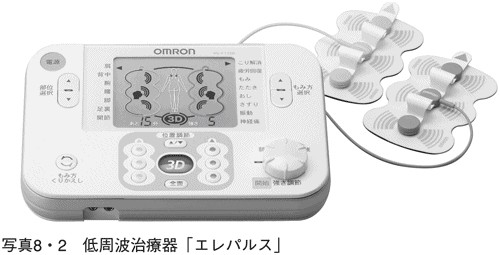
この低周波治療器に使う電気刺激の周波数は、数ヘルツから数十ヘルツという低いものが使われる。しかも、刺激の強さの調節には加える電圧や持続時間などを変化させればよい。症状に合わせて、適当な「刺激の強さ」が選択できるわけである。もちろん、感電するほど大きな電圧を加えるわけではない。しかも、必要な部位を挟んだ二点間のみに電気刺激を加えるので、安全性も確保されている。
医療分野での電気刺激法の応用例もたくさんある。一例をあげるなら、泌尿器科での治療方法としても有用だ。老齢者などに多い排尿障害は、筋収縮の異常が原因で起こるケースが多々ある。そこで、電気刺激装置の登場となる。
本来的に電気で駆動されている筋肉だから、その動きが鈍っているのは「電力不足」が原因だ。それなら、外部から電力供給してやろうという手法は、もっとも理にかなった常套手段ともいえよう。
胃も電気で収縮
これまであげた心電図、脳波、筋電図に加え、人体からの電気現象はさらにいくつか確認されている。
じつは、消化器として食物の消化機能を受け持つ胃にも電気現象が見られる。消化のための胃の運動はいろいろあるが、実際には、20秒に一度程度の機械的収縮がある。これに伴って、同じ周期で電気が発生していることもわかった。この電気は、心電図などに比較してさらに微弱な信号のため確認が容易でないのだが、腹部上部に検出用の電極を配置すると、体表からも検知はできる。この電気現象を記録したものは、胃電図（ＥＧＧ）とよばれている。
胃は平滑筋でできているため、不随意筋の仲間に属し、自分ではコントロールできない。とどのつまり、何らかの自動制御が働かないかぎり動かない、ということになる。そのための自動動作の起因となるのが胃での電気現象と考えられている。
20秒に１回という周期は健常者での平均値であり、毎分３回という計算になる。ところが、慢性胃炎などの疾患では、この周期がくずれていることも見つかっている。毎分の収縮回数が３・６回以上、あるいは２・４回以下という場合を異常値だとする研究もある。
もし、胃電図を記録するための装置を胃電計というなら、その要件は何なのだろう。医学サイドから工学サイドへの要望が出されれば、今後の胃電図の解析も進み、消化機能の分析に役立つ可能性がある。
これまで、胃も心臓のように頻繁に動いていると錯覚していた。だが、１分間に３回しか動かないと聞けば、心臓に比べてみて明らかに怠けものにみえる。だからといって、機械的な消化だけがすべてでなく、化学的な分解もある。だから、胃はゆっくりと時間をかけて働けばいいのかもしれない。
網膜や眼球も
さらに、目の網膜にも電気現象が見つかっており、その記録から網膜電図あるいは網膜電位図（ＥＲＧ）という。網膜に光刺激を受けると網膜細胞が活性化されて、電圧が発生するのだ。実際の測定には、コンタクトレンズに小型の電極を埋め込んでおこなわれる。
網膜電図は網膜疾患などでは重要な検査項目となっている。たとえば、網膜色素変性症という先天性の病気は、夜盲、視野の狭窄、視力の低下などの症状が特徴だ。その判定のために網膜電図検査が有用となる。この疾患では、普通の網膜電図に比べて、電位の変化が小さいこと、あるいは変化があらわれないことがその決め手となる。
一般的には、網膜電図は網膜全体の電位変化をとらえる。ところが、「目の目」といわれる黄斑部といわれるところに、局所的に光を当てて測定されるケースもある。それによりこの部分の病変を検知する試みだ。黄斑部にむくみがあるようなときには、局所網膜電図の振幅が小さいことなどもわかっている。
第６章で記したとおり、眼球を動かすことによって電位が変化することも判明している。この場合は、眼球電図あるいは眼球電位図（ＥＯＧ）とよび、ＲＥМの検出に役立つことを示した。眼科においても網膜の疾患は網膜電図で判定されるが、眼球の運動に関わる疾患の検査には眼球電図が使われる。
これらはともに眼科の診断にとって有用な情報源となっている。
生活習慣レコーダ
直接的に動きをとらえる
人体の機械的な動き、すなわち運動を直接的にとらえる装置もすでに利用されている。
ごく一般的なものでは、万歩計（歩数計ともいう）もその一つで、健康機器の代表例といえよう。
もう少し高機能なものとなると、アクティグラフやライフコーダという製品があり、日中の活動状況、睡眠中の体動など、人間の一日の動作や運動状況を記憶可能である。内部には、三次元空間での加速度の方向と大きさがベクトルとして検出できる加速度センサーが備えられ、三軸方向独立でそれぞれの動きと傾き（姿勢）を計測・記憶する。
加速度センサーの性能は、ここにきて格段に進歩している。たとえば、日立金属が開発した超薄型・小型加速度センサーには圧電素子が利用されている。圧電素子にはバネを介して重りがついており、これに力が加わると素子がひずみを起こし電圧が発生する仕組みだ。Ｈ34Ｃ（写真８・３）という製品は世界でも最小クラスを誇り、パッケージを含めても３ミリ角で、厚さも１ミリに満たない。測定範囲は、重力加速度１Ｇの３倍に当たる±３Ｇ（プラスマイナス３Ｇ）程度。感度は、１Ｇあたり約０・３ボルトのアナログ出力をもっており、０ヘルツ（すなわち直流）から１００ヘルツの周波数範囲の動きが連続的に記録される。
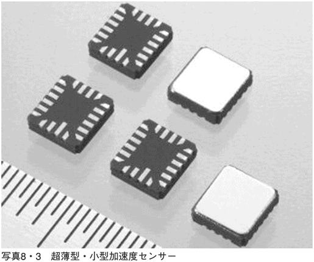
この加速度センサーは、汎用の各種振動の測定に十分な性能を備えている。したがって、人体に関わる動き、つまり、通常の生活状況を反映するに十分過ぎるほどの性能をもっている。
生活動態の記録
加速度センサーを使って、人間の日常生活や病人の活動のチェックに用いられるのがアクティグラフという製品だ。ちょうど腕時計のような形をしていて、マイクロミニ型は約９グラム程度の超小型化を実現している。しかも、電池は充電式またはボタン電池式が選択でき、３週間以上も連続で記録することができる。
ふつうの人間活動では振動するスピードの範囲が限られるため、加速度センサーで感知される周波数範囲を０～10ヘルツに限定してメモリしている。
この加速度センサーの分解能は０・０１Ｇで、睡眠を含めた通常の人間生活の記録が可能だ。ふつうの生活ではスピード、強度ともに一定の範囲にあることがわかっているので、その範囲内での活動記録が長時間にわたってメモリできる、というわけだ。
アクティグラフの利用範囲は、たとえば運転手の活動状況の調査、児童や生徒の生活動態の把握などの場面が考えられる。
第６章で、睡眠時無呼吸症候群（ＳＡＳ）のスクリーニングにＰＳＧという装置を利用することを述べた。ところが、このアクティグラフを使って解析するだけで、この目的に対しても有効だという結果が出ている。この目的での利用なら、小型で睡眠の妨げにならないことが最大のメリットになる。
活動量の記録
加速度センサーを使って、人体の活動量を記録する装置がスズケン社製のライフコーダＰＬＵＳ（写真８・４）という装置だ。日常の活動としての、運動の頻度と強度それに持続時間を最大２００日にわたって記録できる。
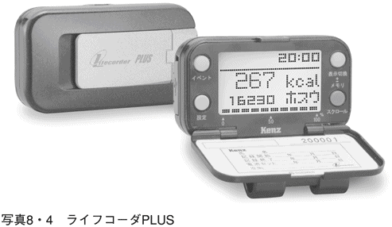
運動の強度としては、生活中のデスクワークや肉体労働、ジョギングや散歩などの各種スポーツ、さらには睡眠などの間でのすべての行動を追尾し続ける。この加速度センサーからの信号は、各個人のもつデータ、たとえば性別、年齢、身長、体重などを勘案して、消費カロリーが算出されて記録される。
記録に残るのは、一日の総カロリー消費量、運動量、歩数などで、本体をパソコンに接続すると、活動の様子がバーグラフなどで示される。
ただし、このようなエネルギー消費量は計測できても、その数値と個人的な疲労度の関係が明らかにされていない。どのくらい動いたか、どんなに働いたかという活動量はわかっても、その人がどの程度消耗しているかは計測できない。あんなに大仕事をやったのに、あるいはマラソン大会で優勝したのにといわれる人がかえって元気だったりするので、エネルギー消費が疲労度と結びつかないのだ。
「動人」が人間の本質なら、動くことによってまた活力を生み出すこともあるのかもしれない。
今や「活動量」はある程度測れるようになってきたが、「疲労度」とか「過労度」などは、まだまだ測定不可能なのだ。
Ｘ線装置
何が世界のサプライズだったのか
レントゲンがＸ線を発見したことは、あまりにもよく知れ渡っている。その有名なシーンの舞台は、１８９５年11月のドイツ・ヴュルツブルグ大学の実験室だ。すでに晩秋の日はとっぷりと暮れ、暗くなった実験室で50歳の物理学者が発見したのが未知の放射線と考えられたＸ線である。
ちょうど暗くなった時刻にさしかかっていたのかどうか、あるいはレントゲン自身がその時刻を待っていたのかもしれない。その日も専門としていた陰極線の研究に取り組んでいた。
電極管は黒い紙で覆っていたにもかかわらず、その紙を通過した何かが少し離れた蛍光板を光らせているのに気づく。確かな予測のもとに努力を積み重ねた夢が実現した瞬間だ。新しい種類の放射線が発せられているという確認でもあった。
その年の暮れに出された「薄い手の影に比べて、手の骨格の影がより濃く撮影できる」という主旨のレントゲンの論文は、衝撃的な発表となった。
この発見についてのセンセーショナルなトピックスは、レントゲンが自分の妻の右手をモデルにしたことだ。右手の骨格とともに、その薬指を飾る指輪が鮮明に映し出されているではないか。世界に向けてはじめて発信された骨格のモノクロ映像は、人びとをして驚嘆の渦に巻き込むのに十分な迫力をもっていた。なぜなら、最愛の人を使った実験なので、その安全性をアピールするのには十分な証拠を示していたからだ。
医学者たちは、解剖という手段をとおして人体の内部組織や構造を知り尽くしている。だが、それが可能なのは死者にすぎなかった。ところが、一枚の生きた人体の内部映像がこの世に紹介された。医学者や科学者はもとより、一般人も巻き込んだ衝撃の大きさが想像できる。20世紀の医学界の進展は、この発見に依存した面が大きかったといっても過言ではない。
Ｘ線技術の光と陰と
Ｘ線を使った装置の用途は、大きく二つに分類される。一つは、一般的な「撮影」で、もう一つが「透視」である。一般的な撮影とは、とりもなおさず透過したＸ線をフィルム上に写し出す方法だ。この方法は、分解能を上げることで鮮明な画像が得られるが、現像という工程を経由するための時間を要する。
これに対して、透視法は高感度のＸ線撮影ができる光電子倍増管を利用することによって実現したものだ。撮影したＸ線像をモニタ画面上に写し出せるため、オンラインによる診断が可能となった。しかし、透視法の場合、Ｘ線の照射量は一般撮影の数十倍になることもあるので、被験者だけでなくＸ線技師の被曝を軽減する対策も必要となる。
ふつう、胸部や歯科を含めた骨格系などのケースでは一般Ｘ線検査で十分である。ところが、消化器系や循環器系などを対象としたＸ線検査では、病状を的確に写し出すことができない。そこで考えられたのが造影剤を利用した造影検査法だ。
造影剤は、Ｘ線が透過しにくい物質や逆にＸ線が透過しやすい物質を使って、胃などの検査対象となる臓器とのあいだにコントラストをつけて撮影する方法である。バリウムのような造影剤は、一般にもよく知られている。
脚光を浴びて躍進してきたＸ線技術ではあるが、光のあたる部分だけではない。Ｘ線による被曝の問題は患者だけでなく、検査者に与える影響もつねに考慮しておかなければならない。そのための対策としてのＸ線防護衣は、検査側にとっても必需品だ。ただ、その材料となるのは鉛が最適だとなると、その重さがバカにならない。そのための軽量化などかずかずの努力が今も続いている。
英語でradiologyという一つのテクノロジーは、大きな一つの学問として、また広範な治療法なども包括して展開されてきた。
しかし、華やかなＸ線技術の活躍するあまたのドラマの舞台裏には、光のあたらない陰の技術開発の存在があることを忘れてはならない。
小さくなったＸ線装置
その陰の部分を引きずりながらも、Ｘ線装置の利用価値は、今世紀になってもさらなる前進を続けている。
Ｘ線撮影装置についていえば、ごく最近になってバッテリーも含めて重さわずか４キログラムという超小型のものがアメリカのアリベックス社で開発された。それはＮＯＭＡＤという製品である（写真９・１）。この程度の重量になれば、ポータブル機とよぶのにふさわしいほどの大きさになったといえよう。そのうえ、低電圧の14・４ボルトで動く充電バッテリーが利用されているので、電源ケーブルがないのを特徴としている。主として歯科においての撮影を目的としているが、「いつでも、どこでも」というのがこの製品のキャッチフレーズだ。
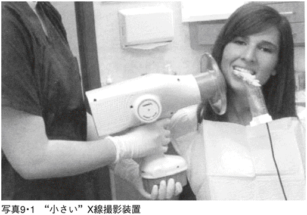
ポータブル機としては、操作者に対する保護対策がさらにいっそう気になる。しかし、この機種では、後方散乱に対して保護を目的とした円盤状の透明な防護カバーが装備されていて、安全確保にも配慮されている。これにより、Ｘ線照射方向とは反対側の操作者方向に漏洩するＸ線を軽減する役目を担っている。
日本で使えるようになる日は、もうすぐそこに来ている。
Ｘ線ＣＴの最新技術
ふつうのＸ線画像は立体的な臓器を二次元の平面上に投影する手法のため、像が重複したり、影になったりという不具合がある。この不具合を解決し、体内の様子をより精密な画像として撮影するために開発されたのがＣＴで、「コンピュータ断層撮影法」を意味している。
頭部の断層像を精密に描写できるＸ線ＣＴ装置が開発されたのは１９７２年だ。この基本技術は、内臓を複数方向から投影して得られた情報をコンピュータで解析して、断面像として再構成することにある。
ＣＴの医学界へのデビューはレントゲンのＸ線発見以来の革命だ、ともいわれた。ふつうのＸ線画像と比較しても分解能がおよそ10倍、空間分解能は１ミリメートルだ。
ＣＴが出現する前をB.C.（before CT）、ＣＴ時代をA.D.（after digital radiography）と表現する。西暦前後としてのB.C.とA.D.のちがいほどに、鮮明に明暗を分けるほどの桁違いの技術革命というわけだ。
Ｘ線ＣＴの基本原理はＸ線装置そのものの原理と何ら変わりなく、Ｘ線が被検体としての人体を透過する性質を利用しているだけだ。ただしＸ線ＣＴのケースでは、複数の箇所から照射したＸ線画像をコンピュータ処理により、精密な断層像とする技術を備えていることにある。
実際には、人体の周囲を回転するＸ線照射部があり、これと対向した位置に検出部がおかれている。照射部にあるＸ線管が高速で回転軌道に沿って回るようになっており、その反対側におかれた検出器で人体を透過した信号を受信する。人体を載せた寝台は、これらの中心となる軸方向にスライドする。照射される人体からみれば、Ｘ線管はラセン軌道上を回転していることになる。
最近のＣＴ装置は高速撮影が可能となったため、被験者の動きなどの影響が軽減されるようになった。当初は動きの少ない頭部断層に限られていた撮影も、次第に全身の臓器への適用が可能となった。それは撮影が高速化したことによってもたらされた恩恵である。
実例として、日立メディコ社製のモデルからReal WAVEテクノロジーというハイテクを紹介しよう。
基本的に入っているマルチスライス（多面断層）ＣＴ技術は、広範囲撮影をおこなってもこれまでのような雑音の発生が少ない。この方式は、画像再構成理論New WAVEテクノロジーとよんで、リアルタイムで画像を作り上げて表示することを実現した。
マルチスライスＣＴで発生する大量の画像は、高速演算チップ、大容量メモリ、最新のＣＰＵで処理される。さらに、高速・大容量データ伝送のために、光伝送方式が使われているため、大量の撮影データを高速にしかも安定して伝送できる。
患者側からＣＴに求められる低被曝という要求にも応えている。それには、画質を維持したまま被曝線量を大幅に低減することが必要で、被曝線量が一定でもＸ線の利用効率を極限まで高める技術が重要視される。
内視鏡
胃の中を覗くことへの執念
話は変わって、直接人体内を見ることへの挑戦の一例だ。ドイツ人医師クスマウルは、生きた人間の胃の中を覗くということに対して強い執念を燃やしていた。彼は、金属管の先に小さな鏡を取りつけることによりこの願いを叶えようと考える。だが、こんなことを実現するためには、余りにも大きな障壁があった。クスマウルが作り上げた金属管の長さは50センチ程度、その直径が13ミリもある。こんな代物をどうやって生きた人間の食道から胃の中に滑り込ませようというのか。
そこでクスマウルは、一つの奇策を思いつく。当時の大道芸人で刀を飲み込める奇術師がいることを知っていた。この奇術師なら何とか飲み込めるだろうと思いついて実際に実現させたのだ。今思うと、この話は逆かもしれない。クスマウルは、この大道芸人の存在を知っていたからこそ、この寸法の胃鏡を設計したのだろう。
現代の世の中で、このような金属管を飲み込む検査をするといったら、患者は一目散に逃げてしまうだろう。だから、これが世界初の「胃鏡」だったという逸話を聞いても、何だそんな非現実的な話か、という程度にしか感じられない。しかし、この話が世界初の胃鏡の発明として記録に残ったのだ。１８６３年というから、19世紀後半の珍事件である。
問題は、一般の人にはとても飲み込めるものではない、という点にあった。太いだけでなく、金属製なので硬くてどうにもならなかったのだ。ただし、それがどんな奇策であったにせよ、世界ではじめてという記録だけは残ったのである。
胃カメラ発明の発端
のちの世になって、この珍事件をただの事件に終わらせなかったのは、日本の医師と技術者だ。
１９５０年といえば、戦後五年のまだ混沌とした時代だった。クスマウルの発想を何とか現実の機器に作り上げたいと立ち上がったのが東京大学の宇治達郎医師とオリンパス社の杉浦睦夫技師らである。宇治医師が杉浦技師にこの話を持ちかけたとき、一番心配だったのは、胃の中にどうして光を当てるかだったという。
翌年の１９５１年に出願された特許のタイトルは、「腹腔内臓器撮影用写真機」（図９・２）。現代人は写真機という日本語をあまり使わない。それゆえに、古典的なイメージが漂い、今では懐かしささえ感じさせる命名だ。
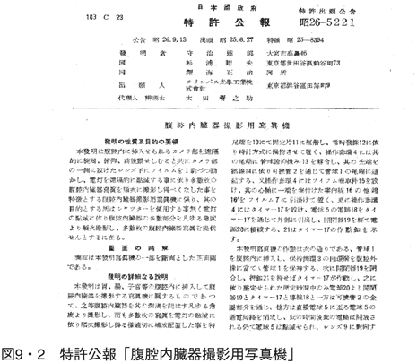
それによると、胃カメラは、軟性の管の先に撮影用の小型のレンズとフィルム、それに加えて照明用のランプが備えられている。これらを体外からコントロールできるようになっている。ただレンズがどこまでとどいているかが不明だったため、フィルムを現像したあとでないと、写っているかどうかさえわからなかった。しかし、軟性だったために、何とか工夫すれば飲み込めるということを考えれば、医学への寄与は大きいものがあった。工夫すればという注釈を入れたが、そう簡単に使えたかどうかとなると、実用からは遠かったといわざるを得ない。
細くなったファイバースコープ
草創期は胃カメラとよばれ、この一般名は現代に引き継がれている。ところが、最近は英語のendoscopeの日本語訳として「内視鏡」とよばれることが多い。接頭辞のendo-は、「内部の」という意味で、endoscopeを直訳すると「内部を覗く」となる。
名称の変化は、実物の進化をもよく反映している。内視鏡で覗けるのは胃や食道だけでなく、気管内に入れれば肺の様子もわかる。また尿道や大腸に応用することによって泌尿器系や大腸・直腸などの診断が可能となってきた。
転機が訪れたのは、光ファイバー技術が利用可能になった１９６０年代になってからだ。光ファイバーはごく細いもので、一端から入った光を端まで能率よく伝える性質がある。そのうえ、曲がっていても光信号を伝えることができるため、内視鏡にとっては願ってもない技術だった。光ファイバーを利用した内視鏡は、一名ファイバースコープともよばれるようになった。
内視鏡の進歩に寄与したもう一つの技術要素が固体撮影素子ＣＣＤだ。ＣＣＤは、小さなシリコン板上に配置された感光素子で、光信号を電気信号に変換できる。すなわち、レンズ系に代わって登場したもので、これが光ファイバーとともに内視鏡技術に必須の要素となった。
これらの技術の集約として、最近の内視鏡は外径５ミリ程度の極細のものも登場した。この程度の細さになれば、鼻孔から挿入することが可能となり、患者にとっても非常に有益だ。「ちょっと細くなっただけ」というものでなく、まったく新しい製品が完成したのと同程度の意味のある前進だ。また、血管内へも挿入できるようになり、消化器系、泌尿器系などに加え、循環器系への応用も可能となった。写真９・３は、オリンパス社製の上部消化管汎用ビデオスコープ Ｎ２６０を示す。
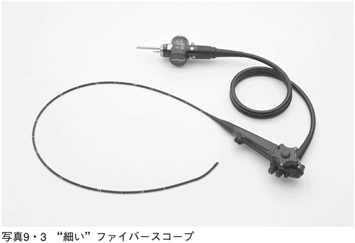
さらに、やや太目の親となるファイバースコープから、子となる細いファイバーを飛び出させて、胆管や膵管といった内臓の深くまで侵入させることもできる。したがって、現代の内視鏡の応用範囲は、人体ほとんどすべての部位に対して観察できるようになったといってよい。
観察しながら治療する
内視鏡の本来の目的は「視る」ことにある。ところが、ファイバースコープの展開はとどまるところを知らない。
一番の有用価値は「視る」だけでなく「治す」方向へも展開したことだろう。光を当てて撮影するだけでなく、空気や水を送ったり、逆に吸い出すこともできる。さらに組織を切ったり、焼いたり、冷やしたり、ということも自由自在だ。
こうなれば、胃を観察しているうちに小さなポリープでも見つかれば、ただちに切除して止血することもできる。しかし、すぐにそこまでいかなくても、ガンかどうかをチェックするために、少しだけ組織を採取してくることも可能だ。この方法は「生検」とよばれるガンの早期発見には欠かせない手法となっている。
さらに最近の内視鏡はハイビジョンという高解像度のものも市場に出まわっている。写真９・４には、同じくオリンパス社製の最新鋭機「内視鏡ビデオスコープシステム（EVIS LUCERA SPECTRUM）」を示す。
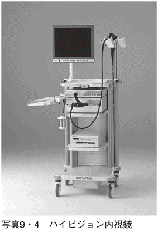
これまで、色や形状が異常なのか正常なのか判別しにくかったものも、ハイビジョンなら明確に判別できるようになってきた。たとえば、以前では不可解だった微細血管や粘膜の表層構造といったものもはっきりと見ることが可能になった。
歴史的な変遷からしても、内視鏡が最も活躍の場を得ているのは胃の観察だ。胃内の様子、とくに粘膜の様子、形状、色などから胃ガンのほか、炎症や潰瘍などを発見することができる。その判別能力は、ハイビジョンであればさらに効果が大きいことはいうまでもない。
ハイビジョンの技術は、衛星放送から地上波デジタル放送の導入などと合わせて新しい高解像度の時代の到来を思わせる。この新しい時代にマッチしているのがハイビジョン内視鏡ということも可能だ。新しい時代に入ったハイビジョン技術の拡がりは、さらに多方面への応用が可能となってゆくだろう。
カプセル内視鏡の出現
さて、内視鏡の世界での新技術として、もう少し違った方面に目を転じてみることにしよう。
ごく最新の技術として注目をよびそうなのがカプセル内視鏡の登場である。
何といってもこの方式の特徴は、患者の負担の低減にある。胃カメラの時代からすれば、最近の内視鏡の進歩は患者にとっては相当に苦痛の少ないものになったとはいえ、たとえ外径５ミリメートルの極細内視鏡であっても、管を挿入するという基本操作には変化がなかった。
ところが、カプセル式なら管の挿入という「やっかいさ」からの解放を意味しており、患者にとっては極めて楽になったといっていいだろう。これまでの、胃の診断の際の、のどの麻酔といった処置も不要となる。
そのうえ、カプセルは錠剤を口から飲み込む方式のうえ、体外からの自由な誘導も可能だ。また、胃や腸の蠕動運動とともに進行することもでき、その過程における消化管の撮影もできる。
この基本技術として利用されているのが無線通信技術である。しかも、消化管内では自由な観察も可能なようにコントロールされている。
カプセル方式は、その本来の機能が「投薬」にある。この本質的な働きもカプセル内視鏡に受け継がれて、カプセルを病変部に導いたところで投薬機能を働かせる。内視鏡で観察しながら必要なところに投薬できることになり、これぞ「一石二鳥」の効果が期待できる。
もう一つの注目点は、体内からの超音波観察が可能なため、これまでの方式では不十分だった部位の観察もおこなえるようになった。当然のことながら、体外からの超音波検査に比較すれば、発射される超音波の減衰が極めて小さく、それゆえに撮影画像の鮮明化が実現できる。
ＭＲＩ
原子の歳差運動を利用
画像を作り上げる代表例をもう一例紹介しよう。１９８０年代になって登場したのがＭＲＩ（核磁気共鳴画像）とよばれる装置だ。
原理といえば、体内の水素原子の運動を外部から加える磁場でコントロールすることによる。水素原子も歳差運動をしていることが知られており、その運動を対外から制御するというのが基本の技術となっている。
歳差運動といえば、地球は２万年の周期で首振り運動をしていることがわかっている。しかし、人間の目で見るには地球は大きすぎるし、かといって原子となれば小さすぎて実感がわかない。手頃な歳差運動として引き合いに出されるのがコマの首振り運動で、こういうものを見せられれば現実味を帯びた話になる。
ＭＲＩのケースも、コマの軸の回転運動をイメージすれば、多少、理解が容易になるだろう。
ＭＲＩ内で何が起こるか、順を追ってステップを書くと次のようになる。
人体を強力な磁界の中に置いて、体内に存在する水素原子核の回転を特定の一方向にそろえておく。
この状態でさらに高周波電磁波を追加して、その回転方向を90度変化させる。この状況を励起という。
次に加えた高周波電磁波を遮断すると、水素原子核の回転方向が元にもどる。この状況を緩和という。
このときに水素原子核から出る電磁波を受信することにより、水素原子核の動きをとらえる。
以上の過程を経て、原子核の動きをとらえることによって体内の水素分布や状態が映し出せる最新技術だ。
短くなったＭＲＩ
脳の疾患を実例にして、ＭＲＩの効用を示しておこう。脳疾患として知られるのは、脳出血、脳梗塞、脳腫瘍などがある。これらの疾患に対し、脳内を輪切りにしたような画像観察が可能だ。
先天性の疾患として知られる脳動静脈奇形という病気では、脳出血を起こすことがある。というより、脳出血によって脳動静脈奇形だとわかることが多い。
脳動静脈奇形は一部の動脈と静脈が異常なつながり方をしている。正常なら毛細血管で連結されているのに、これを介さずに直接つながっている状態をいう。本来、毛細血管から静脈へ流れるべき血流が動脈から静脈に直接流れ込むため、動脈血管に比較すると弱い静脈血管が破れてしまう疾患だ。そのためにこの奇形をもち合わせている患者は、若いうちに脳出血を起こす確率が高くなる。ＭＲＩによれば、脳内出血の症状などは鮮明な画像として提供される。
２００７年秋に発表された東芝メディカル社製の最新鋭機ＥＸＣＥＬＡＲＴ ＶＡＮＴＡＧＥは、これまでのＭＲＩの短所を改良した機種だ（写真９・５）。一番の特徴は静磁界を形成するための短軸マグネットの導入で、磁場の均一化を達成した。そのため画像化できる領域が一気に広くなり、人体形状に合致した撮像領域が確保できる。わかりやすくいうと、人体を収容するドームの部分の奥行きが50センチメートルも短くなり、世界で最短になった。これは、撮影される患者に対しても心理的な圧迫感からの解放を意味する。
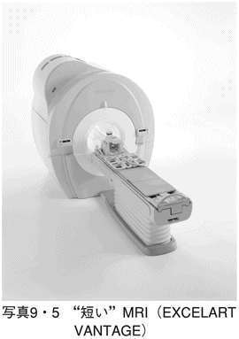
さらに、いいこともつけ加わった。ドームが短くなったのにもかかわらず、撮像領域が広がったので、撮像に要する時間は短縮されたのだ。
もう一つ、従来より問題視されていたことに対しても、十分な改良が加わっている。それは、騒音を減らす工夫だ。従来、ＭＲＩ検査というと、閉鎖性のドーム内でガンガンという騒音に苛まれる状況だった。コイルが振動して、構造自体を揺することによる。しかし、コイルを真空層の中に納め、そのうえで真空層の構造そのものを本体から独立させたのだ。こうした「ピアニッシモ」と称する工夫がなされており、騒音は10分の１に減少した。
被検査者にとっては、長時間、閉鎖性、騒音という三重苦から解放されたといえるだろう。
古典機器と三大神器と
これまでみてきた医療機器を、もう一度、歴史的に振り返ってみよう。まずは、元祖を探る意味で最初の医療機器、あるいは医科器械とは何だろうか。
年次的にいえば、１５９５年頃にオランダの眼鏡商ヤンセン父子が発明した顕微鏡だろう。ただし、この発明は「レンズを二枚重ね合わせた」ことがミソで、一枚のレンズつまり虫眼鏡なら15世紀にまで遡れる。
次が、第７章に書いたサントリオの体温計で、年代は１６１２年になる。何らかの道具を使って人体を測定したり、観察した源流を探すなら、この時期だったということができよう。その共通の動機を推定するなら、当時の好奇心からとしかいいようがない。なぜ、レンズを二枚重ねてみたのか。はたまた、なぜに温度計を人体に当ててみたのか......。
本書ではわずかしか記述してないが、もう一つの先駆け的な器具はフランスのラエネックが発明した聴診器で１８１６年の発案という記録がある。聴診器は世界の医師に２００年近くも使い続けられている。
これらはベテランの現役医療機器でもあり、総称すれば古典機器とでもいえるかもしれない。
これらの古典機器に続いて、19世紀の終わりから20世紀はじめにかけての短期間に、一気にデビューしてきた三つの機種がある。
１８９５年のレントゲンによるＸ線の発見と１８９６年のリヴァロッチの血圧計が近代の医療機器の幕開けを告げた。もう一つは、１９０３年のアイントーフェンの心電図の発見と心電計の試作だ。
年代的にいうなら、１８９５年から１９０３年の８年間に三つの医療機器がこの世に生誕した。しかも、21世紀になっても、これらの機器はいぶし銀のごとく医療の分野で活躍し続けている。この１００年以上もの間、それらの医学への貢献度は計り知れないものがある。その活躍状況から評価すれば、医療機器の三大神器とよべるだろう。
歴史的・世界的に見た技術
現代の医療機器を概観する目的で、主要な機器を抜粋して年代的に整理してみたのが表10・１である。この表では、わが国の特性を探る意味で、欧米との対比を試みた。
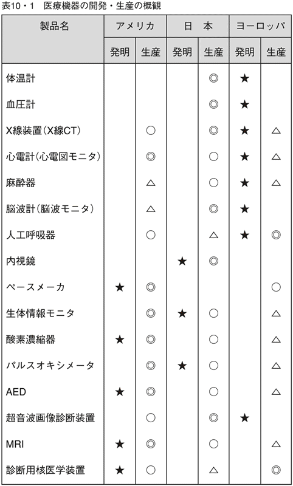
この表から明らかに読み取れることは、20世紀前半までにその多くがヨーロッパで芽生えた技術ではあるが、そこを境として次第にアメリカでの展開となった、ということだろう。そのうえ、最近のアメリカでは、基礎技術の開発も増加していることがわかる。表から教えられることだが、ここにきてヨーロッパからアメリカへ主役が交代したことを印象づける。
この両者と比較して、日本の状況をひとくちでいえば、「善戦」していると評価ができる。しかしながら、スポーツではないが、善戦したが敗北ではあまり意味がない。というより、勝たなければならない試合だってある。もちろん、全勝する必要はないが、参加するものの意義を見い出すために、一つでもキラリと光るものが欲しい。内視鏡とパルスオキシメータは、その有力候補といえるだろう。
そのなかで、パルスオキシメータについては、いくつかの切り口からの現状を述べてきた。この機種が日本の医療機器産業の現況を代弁しているようにも思えるからだ。日本で独自技術として開発したのにもかかわらず、それを産業として見た場合には、決して勝利したとはいえない。こういう貴重な技術を、一つの重要商品に仕立て上げることは、医療機器産業に携わる関係者の責務でもある。
それでは、これからどうするかが一番重要だろう。やはり、独自技術育成とその展開方法策定の必要性を痛感する。と同時に、アメリカ・ヨーロッパとの連携も必要だろう。いわゆる、こうした他国との国際協調というバランス感覚も磨かなくてはならない。独自性と協調性、一見矛盾のようにも聞こえるが、その均等性が大切だ。
人類に役に立つ技術を
「生命を観察し、支援するための技術」というテーマを主軸として、その実情に迫ってみた。
現代の医療機関で活躍するかずかずの医療機器や医療技術は４００年前に産声をあげたが、急速な展開を見せたのはこの１００年あまりの間だ。とはいえ、本文中に示したように、ごくありきたりの事象でも、未開拓な部分を残したままだ。
一見、完成品のように見える「血圧計」や「体温計」がまだまだ理想値からほど遠い。これでいいと思ったら、未熟なままで進歩は止まってしまう。真の医療に貢献する医療機器に大成するためには、もっとつっこんだ基礎研究も必要だ。
血圧計の例にしてもしかり、血圧そのものの追求をはじめとして、装置開発の段取りもまだまだである。実際の血圧とはいったい何かという定義さえはっきり示せない。それでいて、現状の血圧計で測定した値が、「高い、低い」といってそれを重要な治療手段の基礎データに据えている。不安を抱かせるかもしれないが、血圧はもう少し慎重に考えたほうがいいということを知っておくべきだ。
確かに、現代の医療機器で測定可能になった最新技術は、ここまできているのかと驚いた面もあるに違いない。血液中の酸素さえわかる、胃の内壁までも鮮明に映し出せる......など、あげればきりがない。
しかし、その驚異的な先端技術とは裏腹に、ごく基本的な生命の現象、たとえば「眠りの深さ」、「痛み」や「疲れ」などを確かめるための基本技術さえまだ出発点から離れていない、という現実もある。「血管の硬さ」や「血糖値」なども簡単には測れない。このギャップがじつは真の現状なのだ。いいかえれば、そのギャップの深さを認識してもらうことが、本書の記述の主目的でもあった。
一つのことを、わかったというのは、その範囲が理解できたというのと等しい。そのレベルから見れば、千差万別の医療機器とその技術の程度が理解していただけたのではないだろうか。
これらの現存する医療機器の最前線でさえ、まだまだ先は見えない。というより、ある一つの目標点に到達した途端、新たな目標がその先にいくつも出現する。対象となる人体の寿命はたかだか１００歳程度だが、もう４００歳の医療機器の技術革新は無限に続く。
本書で記述してある技術も、現時点では最先端かもしれないが、真に人類の生命を救うものになるためには、まだ遠い目標への一歩を踏み出したばかりなのである。
おわりに
一般書を書いたのは、８年ぶりだろうか。以前から準備をしていたが、本格的に書き出したのは、猛烈な熱波がようやくその牙を納めつつあった２００７年の夏の終わり頃だ。それから一年弱、ようやくこの挨拶を書くところまでになった。
本を書くスピードは、決して速いほうだとは思っていない。しかし、一日に数ページのスピードでも、確実に完結に向かっていることを意識してきた。そのことが、私をして、いつも前向きな姿勢へと導いてくれる。「前進は力なり」ということか。
このフレーズは、私自身の思いつきに過ぎないが、ご承知のとおり本来なら「継続は力なり」というべきだ。長きにわたり、幸いにして「医療機器の開発」という同じ業務を連続して遂行してきた。少なくとも、前向きに、しかも生産的に続けられた、と感じている。ただの慢性的な継続でなく、前向きの継続、つまり「前進的継続は力なり」というべきなのか。
ただ、いつもながら感謝しているのは、これまでの私の周りにいてくれる多くの関係者たちだ。私がかつて所属した会社の先輩・後輩たち、この業界の多くの関係者たち、そして現在もなお世話になっている会社の同僚と、病院の先生方、学会の方々、とあげればきりがない。いくら、私個人が半世紀に近い「経験者」だとしても、決して個の力だけでは、医療機器全般を網羅する本にならない。つまり、この本はこうした多くの人びととの共有財産から生まれた、と感じている。
ここ数年来、医療機器は人の目のつくところにも配備されてきている。だが、一般の目からすれば、それが何を意味するのかさえわからない状況だというのが偽らざる私見でもある。実際目にしながら、その存在意義さえ理解されなければ、「普及した」ことにならない。「馬の耳に念仏」「豚に真珠」の類に過ぎない。本当に「普及した」といえるのは、その存在価値が認められ、かつ必要なときに利用されるようになってからだ。残念ながら、現時点では、とてもその領域に達していない。
こうした現状を打破するために、本書がいくらかでも役に立つなら、筆者としての目的が果たせる。
この本を企画したのは、一年以上前、当初は「工学から見た医学」という論点を軸として展開しようと考えていた。だが、これだけでは、右記の目的にほど遠くなる。せめて、もう少し実用的な面を考慮するなら、現状の医療機器そのものをやさしく解説するほうがいい。その段階で、より実機面・実用面に重点を置くべきというアドバイスは、ＰＨＰ新書・編集長の阿達真寿氏からいただいた。本書執筆の目的に対しては直線的に進行できるので、私も賛同し、その方向へと大きく軌道修正した。
本書を書き終えて感じるのは、この方向転換が私自身のメリットだけでなく、おそらく読者にとっての有用性を引き出せたのではないか、ということである。元来、私自身が研究者タイプでなく、むしろ実業を実践する一人である。それゆえに、書くほうとしても普段着のままでとりかかれるようになり、格段に書きやすくなった。それに加え、読者諸氏にとっても医療現場などで使われる機器の実用性に触れられる。ソフト面だけでなく、最新のハード面の知識が得られれば、読者自身の知見が増加することになる。
これらの点を認識してもらえるなら、この方向が正しかったと確信できる。ぜひとも、そうあってほしいと、心から願うものである。
２００８年 盛夏のころに
久保田博南
【参考文献】
『未熟児』、山内逸郎、岩波書店、１９９２
『医者の小道具・大道具１２２』、朝日新聞科学部、羊土社、１９９２
『脳波と夢』、石山陽事、コロナ社、１９９４
『生体磁気計測』、小谷誠ほか、コロナ社、１９９５
『血圧の話』、尾前照雄、岩波書店、１９９６
『バイタルサインモニタ入門』、久保田博南、秀潤社、２０００
『脳と体温』、彼末一之ほか、共立出版、２０００
『エッセンシャル解剖・生理学』、堀川宗之、秀潤社、２００１
『電気システムとしての人体』、久保田博南、講談社、２００１
『臨床モニター機器の知識と使い方』、並木昭義ほか、真興交易医書出版部、２００３
『体温生理学テキスト』、入來正躬、文光堂、２００３
『脈をどう診るか』臨床動脈波研究会、メジカルビュー社、２００３
『医療機器の歴史』、久保田博南、真興交易医書出版部、２００３
『温度から見た宇宙・物質・生命』、ジノ・セグレ、講談社、２００４
『ドキュメント新潟県中越地震』、Ｊレスキュー編集部、イカロス出版、２００５
『生体情報モニタ開発史』、久保田博南、真興交易医書出版部、２００５
『バイタルサイン収集論』、久保田博南、真興交易医書出版部、２００６
『血液ガスをめぐる物語』、諏訪邦夫、中外医学社、２００７
久保田博南［くぼた・ひろなみ］
１９４０年、群馬県生まれ。群馬大学工学部電気工学科卒業。日本光電工業、コントロンインスツルメンツを経て、現在、ケイ・アンド・ケイ ジャパン代表取締役。この間、生体情報モニタなどの研究開発に従事。ＩＳＯ（国際標準化機構）委員、医療機器開発コンサルタント、サイエンスライター。
著書に、『電気システムとしての人体』（講談社ブルーバックス）、『電波で巡る国ぐに』（コロナ社）、『医療機器の歴史』〈日本医療機器学会著述賞受賞〉、『生体情報モニタ開発史』『バイタルサイン収集論』（以上、真興交易医書出版部）、『バイタルサインモニタ入門』（秀潤社）など多数。
いのちを救う先端技術
――医療機器はどこまで進化したのか
著 者：久保田博南
 Hironami Kubota
Hironami Kubota
この電子書籍は『いのちを救う先端技術 医療機器はどこまで進化したのか』二〇〇八年九月二日第一版第一刷発行を底本としています。
電子書籍版
発行者：安藤卓
発行所：株式会社ＰＨＰ研究所
本書の無断複写（コピー）は著作権法上での例外を除き、禁じられています。